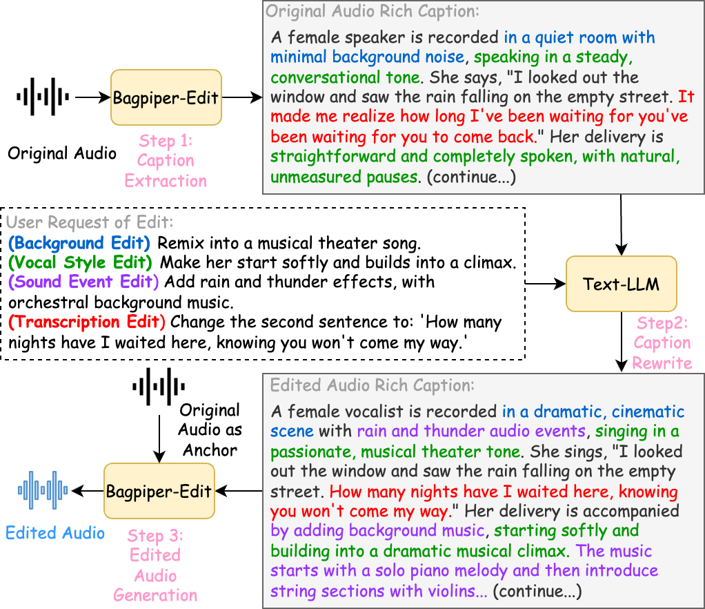
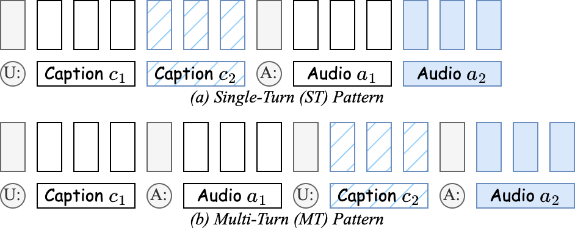

| Source | Bagpiper-Edit (MT) | Bagpiper-Edit (ST) | Bagpiper-Base (TTS) | Bagpiper-Base | CosyVoice-3 | Step-Audio-EditX | Ming-UniAudio-Edit | AudioLDM2 |
|---|---|---|---|---|---|---|---|---|
| Original unedited audio clip | Bagpiper-Edit, Multi-Turn (MT) inference, trained without paired audio-edit data, trained with only self-supervised data. | Bagpiper-Edit, Single-Turn (ST) inference, trained without paired audio-edit data, trained with only self-supervised data. | Bagpiper-Base, TTS inference from target caption only, without fine-tuning. | Bagpiper-Base, Multi-Turn (MT) inference, without fine-tuning. | CosyVoice-3, trained with paired speech-edit data, zero-shot prompting. | Step-Audio-EditX, trained with paired speech-edit data, constraint inference parameters. | Ming-UniAudio-Edit, trained with paired speech-edit data, constraint prompting. | AudioLDM2, text-prompt-only inference. |
Editing operations that modify the spoken content, speaking style, or emotion of a speech utterance.
Remove specific words or phrases from the utterance while keeping the rest natural.
| Original Text | Edit Prompt | Original Caption | Edited Caption | Source | Bagpiper-Edit (MT) | Bagpiper-Edit (ST) | Bagpiper-Base (TTS) | Bagpiper-Base | CosyVoice-3 | Step-Audio-EditX | Ming-UniAudio-Edit |
|---|---|---|---|---|---|---|---|---|---|---|---|
| well then last here is turner's greek school of the highest class and you define his art absolutely as first the displaying intensely and with the sternest intellect of natural form as it is and then the envelopment of it with cloud and fire | Delete 'absolutely' and 'as it is' |
The audio begins with a single, mature male voice, speaking in a measured, formal, and analytical tone, characterized by a General American accent with no regional markers. The speaker addresses an unseen audience, likely an academic or literary group, in a quiet, acoustically dry room—possibly a lecture hall or recording booth—using a close microphone to capture his voice with clarity and intimacy. There is a steady background hiss, consistent with analog tape or low-fidelity digital recording, and no environmental sounds, music, or distractions.
He opens with, “Well then, last, here is Turner's,” introducing Turner as the subject of his analysis. He continues, “Greek school of the highest class,” establishing Turner’s artistic lineage and high esteem. The speaker proceeds, “And you define his art absolutely,” using precise, formal language typical of early 20th-century American literary criticism. He then offers a two-part definition: “as first the displaying intensely and with the sternest intellect of natural form as it is.” The speaker pauses deliberately after “as it is,” allowing the phrase to resonate with emphasis and gravity. He concludes, “And then the envelopment of it with cloud and fire,” using the metaphor “cloud and fire” to describe Turner’s dramatic and expressive handling of light and atmosphere.
Throughout, the speaker’s delivery is slow and deliberate, with clear enunciation and frequent pauses that enhance the sense of careful analysis. The speech is delivered in a single, uninterrupted take, with no interruptions or extraneous sounds, reinforcing the impression of a prepared lecture or recorded commentary. The recording’s technical limitations—persistent hiss, low-frequency hum, and a lack of high-frequency detail—add a historical, documentary character, suggesting the source is from the 1920s–1940s. The style, diction, and delivery indicate a formal, educated setting, likely an academic or literary gathering, with the speaker functioning as an authoritative critic or lecturer.
In summary, the audio presents a formal, analytical lecture in which a mature male speaker defines J.M.W. Turner’s art as a synthesis of rigorous naturalism and dramatic atmospheric expression, delivered in a controlled, reverberation-free environment with historical technical characteristics. The speech’s structure, vocabulary, and context suggest a mid-20th-century American academic setting, offering a clear and authoritative interpretation of Turner’s work to an educated audience. |
The audio begins with a single, mature male voice, speaking in a measured, formal, and analytical tone, characterized by a General American accent with no regional markers. The speaker addresses an unseen audience, likely an academic or literary group, in a quiet, acoustically dry room—possibly a lecture hall or recording booth—using a close microphone to capture his voice with clarity and intimacy. There is a steady background hiss, consistent with analog tape or low-fidelity digital recording, and no environmental sounds, music, or distractions.
He opens with, “Well then, last, here is Turner's,” introducing Turner as the subject of his analysis. He continues, “Greek school of the highest class,” establishing Turner’s artistic lineage and high esteem. The speaker proceeds, “And you define his art first the displaying intensely and with the sternest intellect of natural form,” using precise, formal language typical of early 20th-century American literary criticism. He pauses slightly after “natural form,” allowing the idea to settle before continuing. He concludes, “And then the envelopment of it with cloud and fire,” using the metaphor “cloud and fire” to describe Turner’s dramatic and expressive handling of light and atmosphere.
Throughout, the speaker’s delivery is slow and deliberate, with clear enunciation and frequent pauses that enhance the sense of careful analysis. The speech is delivered in a single, uninterrupted take, with no interruptions or extraneous sounds, reinforcing the impression of a prepared lecture or recorded commentary. The recording’s technical limitations—persistent hiss, low-frequency hum, and a lack of high-frequency detail—add a historical, documentary character, suggesting the source is from the 1920s–1940s. The style, diction, and delivery indicate a formal, educated setting, likely an academic or literary gathering, with the speaker functioning as an authoritative critic or lecturer.
In summary, the audio presents a formal, analytical lecture in which a mature male speaker defines J.M.W. Turner’s art as a synthesis of rigorous naturalism and dramatic atmospheric expression, delivered in a controlled, reverberation-free environment with historical technical characteristics. The speech’s structure, vocabulary, and context suggest a mid-20th-century American academic setting, offering a clear and authoritative interpretation of Turner’s work to an educated audience. |
||||||||
| so for the hundredth time she was thinking today as she walked alone up the lane back of the barn and then slowly down through the bottoms | Delete 'for the hundredth time' |
The audio clip opens with a single female narrator, her voice recorded in a high-fidelity, close-miked studio setting. She speaks in a calm, measured, and reflective tone, employing a General American English accent. The narration begins with, "So for the hundredth time, she was thinking today, as she walked alone up the lane back of the barn, and then slowly down through the bottoms." The pacing is deliberate, with each phrase delivered evenly, and a subtle breath is audible before "as she walked," emphasizing the contemplative mood. The narrator’s delivery is steady and neutral, with no overt emotional inflection, but the choice of words—particularly "hundredth time" and "thinking"—suggests a sense of recurring, perhaps melancholy, introspection.
The recording is characterized by exceptional clarity, with no background noise, hiss, or environmental sounds, indicating a professionally controlled studio environment. The voice is centered and dry, with no perceptible reverb or spatial cues, and the frequency range is focused on the midrange, lending the voice a warm, slightly muffled quality. The clip ends abruptly, with no fade or lingering sound, suggesting that it is an excerpt from a longer work.
No other voices, music, or ambient sounds are present, reinforcing the sense of isolation and focus on the narrator’s words. The vocabulary and phrasing, including the use of "hundredth time" and the reference to rural geography ("the bottoms"), point toward a literary work rooted in early-to-mid 20th-century American rural life, likely from a novel or short story. The absence of modern language or stylistic markers further situates the narrative in a historical context, evoking the traditions of American literary realism.
In summary, this audio excerpt features a solitary, contemplative female narrator reading from a classic American rural novel or short story. The narration is delivered in a neutral, reflective tone, with no musical or environmental accompaniment, set against the backdrop of a meticulously recorded studio environment. The content and style evoke a sense of timeless introspection and rural Americana, characteristic of early-to-mid 20th-century literature. |
The audio clip opens with a single female narrator, her voice recorded in a high-fidelity, close-miked studio setting. She speaks in a calm, measured, and reflective tone, employing a General American English accent. The narration begins with, "So she was thinking today, as she walked alone up the lane back of the barn, and then slowly down through the bottoms." The pacing is deliberate, with each phrase delivered evenly, and a subtle breath is audible before "as she walked," emphasizing the contemplative mood. The narrator’s delivery is steady and neutral, with no overt emotional inflection, but the choice of words—particularly "thinking"—suggests a sense of recurring, perhaps melancholy, introspection.
The recording is characterized by exceptional clarity, with no background noise, hiss, or environmental sounds, indicating a professionally controlled studio environment. The voice is centered and dry, with no perceptible reverb or spatial cues, and the frequency range is focused on the midrange, lending the voice a warm, slightly muffled quality. The clip ends abruptly, with no fade or lingering sound, suggesting that it is an excerpt from a longer work.
No other voices, music, or ambient sounds are present, reinforcing the sense of isolation and focus on the narrator’s words. The vocabulary and phrasing, including the reference to rural geography ("the bottoms"), point toward a literary work rooted in early-to-mid 20th-century American rural life, likely from a novel or short story. The absence of modern language or stylistic markers further situates the narrative in a historical context, evoking the traditions of American literary realism.
In summary, this audio excerpt features a solitary, contemplative female narrator reading from a classic American rural novel or short story. The narration is delivered in a neutral, reflective tone, with no musical or environmental accompaniment, set against the backdrop of a meticulously recorded studio environment. The content and style evoke a sense of timeless introspection and rural Americana, characteristic of early-to-mid 20th-century literature. |
- | |||||||
| the family likeness between her and her niece dinah morris with the contrast between her keenness and dinah's seraphic gentleness of expression might have served a painter as an excellent suggestion for a martha and mary | Delete 'between her and her niece dinah morris' |
The audio clip begins with a soft, breathy inhalation from a female speaker, immediately establishing her presence and marking the start of the reading. Her voice is clear, steady, and articulate, delivered in a formal, measured pace with careful enunciation. The recording environment is acoustically dry and silent, with no background noise, echo, or reverberation, indicating a controlled studio or booth setting. The only persistent artifact is a faint, high-frequency hiss, characteristic of professional analog tape or preamp noise.
The speaker reads the following passage in a narrative, reflective tone: "The family likeness between her and her niece Dinah Morris, with the contrast between her keenness and Dinah's seraphic gentleness of expression, might have served a painter as an excellent suggestion for a Martha and Mary." Her intonation is even and neutral, with subtle emphasis on key descriptive words such as "keenness," "seraphic," and "gentleness," as well as the names "Dinah Morris" and "Martha and Mary." The passage is presented as a literary or critical analysis, using the "Martha and Mary" motif—a reference to biblical figures representing contrasting temperaments—to frame the comparison between the two characters. There is no emotional inflection, musical accompaniment, or additional sound effects; the focus remains entirely on the spoken word.
The recording ends abruptly with a soft, natural exhalation, signifying the conclusion of the reading. There is no fade-out, additional speech, or ambient noise, reinforcing the impression of a tightly edited studio excerpt.
In summary, the audio is a professionally produced, high-fidelity excerpt featuring a female narrator reading a literary analysis that contrasts two characters using the biblical "Martha and Mary" motif. The delivery is formal, precise, and emotionally neutral, set in a silent, controlled recording environment, with only a subtle analog hiss as a technical artifact. The passage is presented as part of a broader critical or narrative work, likely intended for audiobook or broadcast use. |
The audio clip begins with a soft, breathy inhalation from a female speaker, immediately establishing her presence and marking the start of the reading. Her voice is clear, steady, and articulate, delivered in a formal, measured pace with careful enunciation. The recording environment is acoustically dry and silent, with no background noise, echo, or reverberation, indicating a controlled studio or booth setting. The only persistent artifact is a faint, high-frequency hiss, characteristic of professional analog tape or preamp noise.
The speaker reads the following passage in a narrative, reflective tone: "The family likeness with the contrast between her keenness and Dinah's seraphic gentleness of expression might have served a painter as an excellent suggestion for a Martha and Mary." Her intonation is even and neutral, with subtle emphasis on key descriptive words such as "keenness," "seraphic," and "gentleness," as well as the names "Dinah" and "Martha and Mary." The passage is presented as a literary or critical analysis, using the "Martha and Mary" motif—a reference to biblical figures representing contrasting temperaments—to frame the comparison between the two characters. There is no emotional inflection, musical accompaniment, or additional sound effects; the focus remains entirely on the spoken word.
The recording ends abruptly with a soft, natural exhalation, signifying the conclusion of the reading. There is no fade-out, additional speech, or ambient noise, reinforcing the impression of a tightly edited studio excerpt.
In summary, the audio is a professionally produced, high-fidelity excerpt featuring a female narrator reading a literary analysis that contrasts two characters using the biblical "Martha and Mary" motif. The delivery is formal, precise, and emotionally neutral, set in a silent, controlled recording environment, with only a subtle analog hiss as a technical artifact. The passage is presented as part of a broader critical or narrative work, likely intended for audiobook or broadcast use. |
||||||||
| broad as the prairies and free in thought as the winds that sweep them he is idiosyncratically opposed to loose and wasteful methods to plans of empire that neglect the poor at the gate | Delete 'in thought as the winds that sweep them' |
The audio begins in complete silence, which is soon broken by a single, clear male voice with a mature, resonant timbre. The speaker’s delivery is deliberate and expressive, marked by a measured cadence and a distinct General American accent, with rhotic articulation and precise vowel pronunciation. As he begins, a faint, continuous high-frequency hiss becomes perceptible, indicative of analog tape or microphone self-noise, and remains throughout the recording. The speaker recites the following lines: “Broad as the prairies and free in thought as the winds that swept them. He is idiosyncratically opposed to loose and wasteful methods, to plans of empire that neglect the poor at the gate.” His tone is formal and declamatory, with a slow, deliberate rhythm and subtle dynamic shifts—rising for emphasis on key words and phrases such as “idiosyncratically,” “loose and wasteful methods,” and “the poor at the gate.” The pacing is consistent, with a slight pause after “them” and a longer pause following “methods,” underscoring the rhetorical nature of the passage.
The recording environment is acoustically dry and intimate, with no audible reverberation, suggesting a small, professionally treated studio or booth. The absence of background sounds, music, or any non-speech noises further points to a controlled, purposeful production. The voice is centrally positioned, clear, and free from distortion, indicating the use of a high-quality condenser microphone and professional-level audio engineering. The frequency response is focused on the midrange, with limited bass and treble, resulting in a warm, mid-heavy tonality typical of mid-20th-century analog recordings.
The spoken content is a paraphrased excerpt from President Franklin D. Roosevelt’s 1932 Democratic National Convention acceptance speech, specifically reflecting the values of New Deal-era American liberalism. The language is formal, elevated, and civic-minded, employing literary and political rhetoric to evoke ideals of freedom, opposition to wastefulness, and advocacy for the marginalized. The delivery is serious and impassioned, with a tone that is both dignified and emotionally resonant, designed to inspire and persuade.
The overall atmosphere of the recording is solemn and reflective, enhanced by the absence of ambient sounds and the intimate, focused presentation of the voice. The analog hiss and mid-heavy frequency response further reinforce the impression of a mid-century archival source, likely produced for radio broadcast, educational, or documentary purposes. The speaker’s American accent and the formal, civic tone of the speech firmly situate the clip within the cultural and historical context of 1930s America and its progressive political ideals.
In summary, the audio is a professionally produced, analog-era recording of a male speaker reciting a paraphrased excerpt from FDR’s 1932 speech, delivered in a formal, declamatory manner with a General American accent. The content emphasizes civic values and opposition to wasteful governance, set against the backdrop of mid-20th-century American liberalism. The technical and stylistic features suggest a purposeful, archival production intended for broadcast or educational use, with a solemn, reflective atmosphere and a clear focus on rhetorical and historical significance. |
The audio begins in complete silence, which is soon broken by a single, clear male voice with a mature, resonant timbre. The speaker’s delivery is deliberate and expressive, marked by a measured cadence and a distinct General American accent, with rhotic articulation and precise vowel pronunciation. As he begins, a faint, continuous high-frequency hiss becomes perceptible, indicative of analog tape or microphone self-noise, and remains throughout the recording. The speaker recites the following lines: “Broad as the prairies and free. He is idiosyncratically opposed to loose and wasteful methods, to plans of empire that neglect the poor at the gate.” His tone is formal and declamatory, with a slow, deliberate rhythm and subtle dynamic shifts—rising for emphasis on key words and phrases such as “idiosyncratically,” “loose and wasteful methods,” and “the poor at the gate.” The pacing is consistent, with a slight pause after “free” and a longer pause following “methods,” underscoring the rhetorical nature of the passage.
The recording environment is acoustically dry and intimate, with no audible reverberation, suggesting a small, professionally treated studio or booth. The absence of background sounds, music, or any non-speech noises further points to a controlled, purposeful production. The voice is centrally positioned, clear, and free from distortion, indicating the use of a high-quality condenser microphone and professional-level audio engineering. The frequency response is focused on the midrange, with limited bass and treble, resulting in a warm, mid-heavy tonality typical of mid-20th-century analog recordings.
The spoken content is a paraphrased excerpt from President Franklin D. Roosevelt’s 1932 Democratic National Convention acceptance speech, specifically reflecting the values of New Deal-era American liberalism. The language is formal, elevated, and civic-minded, employing literary and political rhetoric to evoke ideals of freedom, opposition to wastefulness, and advocacy for the marginalized. The delivery is serious and impassioned, with a tone that is both dignified and emotionally resonant, designed to inspire and persuade.
The overall atmosphere of the recording is solemn and reflective, enhanced by the absence of ambient sounds and the intimate, focused presentation of the voice. The analog hiss and mid-heavy frequency response further reinforce the impression of a mid-century archival source, likely produced for radio broadcast, educational, or documentary purposes. The speaker’s American accent and the formal, civic tone of the speech firmly situate the clip within the cultural and historical context of 1930s America and its progressive political ideals.
In summary, the audio is a professionally produced, analog-era recording of a male speaker reciting a paraphrased excerpt from FDR’s 1932 speech, delivered in a formal, declamatory manner with a General American accent. The content emphasizes civic values and opposition to wasteful governance, set against the backdrop of mid-20th-century American liberalism. The technical and stylistic features suggest a purposeful, archival production intended for broadcast or educational use, with a solemn, reflective atmosphere and a clear focus on rhetorical and historical significance. |
- | |||||||
| but anne had begun to suffer just before the holidays and charlotte watched over her younger sisters with the jealous vigilance of some wild creature that changes her very nature if danger threatens her young | Delete 'just before the holidays and' |
The audio clip opens with a soft inhalation, immediately followed by a single female narrator delivering a measured, expressive reading in clear, standard North American English. Her voice is smooth, mid-to-high in pitch, and delivered with a controlled, slightly melancholic tone. She narrates, “But Anne had begun to suffer just before the holidays and Charlotte watched over her younger sisters with the jealous vigilance of some wild creature that changes her very nature if danger threatens her young.” The pacing is deliberate, marked by natural pauses at punctuation and sentence boundaries. Subtle breaths between phrases and a gentle, brief intake before “that changes her very nature” contribute to the intimate atmosphere, while the word “young” is given a slightly softer, more reflective inflection. No other sounds intrude; the background remains entirely silent, save for a faint, steady electronic hiss characteristic of high-quality studio recording equipment.
The narrator’s delivery is emotionally nuanced, conveying care and tension through her tone and pacing, which suggests a scene of familial concern and protective instinct. The passage references a holiday period, likely autumn or winter, and evokes themes of illness, family dynamics, and maternal-like vigilance. The language and narrative style are consistent with mid-20th-century American literature, specifically the classic “Anne of Green Gables” series by L.M. Montgomery. The lack of ambient noise, reverberation, or environmental cues points to a professional studio setting, and the technical clarity—broad frequency response, absence of distortion or clipping, and high signal-to-noise ratio—underscores the polished nature of the production.
In summary, this is a professionally recorded, high-fidelity excerpt of a classic literary work, featuring a single female narrator who delivers a poignant passage from “Anne of Green Gables.” The narration is emotionally expressive and technically pristine, set in a quiet, controlled studio environment, and is intended for an audience seeking immersive storytelling and literary appreciation. |
The audio clip opens with a soft inhalation, immediately followed by a single female narrator delivering a measured, expressive reading in clear, standard North American English. Her voice is smooth, mid-to-high in pitch, and delivered with a controlled, slightly melancholic tone. She narrates, “But Anne had begun to suffer and Charlotte watched over her younger sisters with the jealous vigilance of some wild creature that changes her very nature if danger threatens her young.” The pacing is deliberate, marked by natural pauses at punctuation and sentence boundaries. Subtle breaths between phrases and a gentle, brief intake before “that changes her very nature” contribute to the intimate atmosphere, while the word “young” is given a slightly softer, more reflective inflection. No other sounds intrude; the background remains entirely silent, save for a faint, steady electronic hiss characteristic of high-quality studio recording equipment.
The narrator’s delivery is emotionally nuanced, conveying care and tension through her tone and pacing, which suggests a scene of familial concern and protective instinct. The passage references a period of illness and evokes themes of family dynamics and maternal-like vigilance. The language and narrative style are consistent with mid-20th-century American literature, specifically the classic “Anne of Green Gables” series by L.M. Montgomery. The lack of ambient noise, reverberation, or environmental cues points to a professional studio setting, and the technical clarity—broad frequency response, absence of distortion or clipping, and high signal-to-noise ratio—underscores the polished nature of the production.
In summary, this is a professionally recorded, high-fidelity excerpt of a classic literary work, featuring a single female narrator who delivers a poignant passage from “Anne of Green Gables.” The narration is emotionally expressive and technically pristine, set in a quiet, controlled studio environment, and is intended for an audience seeking immersive storytelling and literary appreciation. |
||||||||
| but anne had begun to suffer just before the holidays and charlotte watched over her younger sisters with the jealous vigilance of some wild creature that changes her very nature if danger threatens her young | Delete 'just before the holidays and' |
The audio clip opens with a soft inhalation, immediately followed by a single female narrator delivering a measured, expressive reading in clear, standard North American English. Her voice is smooth, mid-to-high in pitch, and delivered with a controlled, slightly melancholic tone. She narrates, “But Anne had begun to suffer just before the holidays and Charlotte watched over her younger sisters with the jealous vigilance of some wild creature that changes her very nature if danger threatens her young.” The pacing is deliberate, marked by natural pauses at punctuation and sentence boundaries. Subtle breaths between phrases and a gentle, brief intake before “that changes her very nature” contribute to the intimate atmosphere, while the word “young” is given a slightly softer, more reflective inflection. No other sounds intrude; the background remains entirely silent, save for a faint, steady electronic hiss characteristic of high-quality studio recording equipment.
The narrator’s delivery is emotionally nuanced, conveying care and tension through her tone and pacing, which suggests a scene of familial concern and protective instinct. The passage references a holiday period, likely autumn or winter, and evokes themes of illness, family dynamics, and maternal-like vigilance. The language and narrative style are consistent with mid-20th-century American literature, specifically the classic “Anne of Green Gables” series by L.M. Montgomery. The lack of ambient noise, reverberation, or environmental cues points to a professional studio setting, and the technical clarity—broad frequency response, absence of distortion or clipping, and high signal-to-noise ratio—underscores the polished nature of the production.
In summary, this is a professionally recorded, high-fidelity excerpt of a classic literary work, featuring a single female narrator who delivers a poignant passage from “Anne of Green Gables.” The narration is emotionally expressive and technically pristine, set in a quiet, controlled studio environment, and is intended for an audience seeking immersive storytelling and literary appreciation. |
The audio clip opens with a soft inhalation, immediately followed by a single female narrator delivering a measured, expressive reading in clear, standard North American English. Her voice is smooth, mid-to-high in pitch, and delivered with a controlled, slightly melancholic tone. She narrates, “But Anne had begun to suffer and Charlotte watched over her younger sisters with the jealous vigilance of some wild creature that changes her very nature if danger threatens her young.” The pacing is deliberate, marked by natural pauses at punctuation and sentence boundaries. Subtle breaths between phrases and a gentle, brief intake before “that changes her very nature” contribute to the intimate atmosphere, while the word “young” is given a slightly softer, more reflective inflection. No other sounds intrude; the background remains entirely silent, save for a faint, steady electronic hiss characteristic of high-quality studio recording equipment.
The narrator’s delivery is emotionally nuanced, conveying care and tension through her tone and pacing, which suggests a scene of familial concern and protective instinct. The passage references a period of illness and evokes themes of family dynamics and maternal-like vigilance. The language and narrative style are consistent with mid-20th-century American literature, specifically the classic “Anne of Green Gables” series by L.M. Montgomery. The lack of ambient noise, reverberation, or environmental cues points to a professional studio setting, and the technical clarity—broad frequency response, absence of distortion or clipping, and high signal-to-noise ratio—underscores the polished nature of the production.
In summary, this is a professionally recorded, high-fidelity excerpt of a classic literary work, featuring a single female narrator who delivers a poignant passage from “Anne of Green Gables.” The narration is emotionally expressive and technically pristine, set in a quiet, controlled studio environment, and is intended for an audience seeking immersive storytelling and literary appreciation. |
||||||||
| a narrow channel formed a passage through the ridge of rocks that protected it from the open sea and which even in the roughest weather would ensure the calmness of its waters | Delete 'that protected it from the open sea and' |
The audio begins with a single adult male voice, recorded in a studio setting, speaking in a measured, formal tone with a standard American accent. The environment is acoustically controlled, with only a faint electronic hiss and a low-frequency hum in the background, and no ambient or environmental sounds. The speaker enunciates clearly and deliberately, employing a steady rhythm and precise diction, with a slightly elevated pitch in the opening phrase and a subtle, natural downward inflection as the passage concludes. His delivery is neutral and narrative, marked by the use of advanced vocabulary such as "narrow channel," "passage," "ridge," "protected," "ensured," and "calmness," which indicate an educated or professional background.
The passage describes a geographical feature: "A narrow channel formed a passage through the ridge of rocks that protected it from the open sea, and which, even in the roughest weather, would ensure the calmness of its waters." The narration is continuous, without pauses, and ends abruptly mid-word ("waters..."), suggesting an excerpt from a longer reading. The content is technical and descriptive, focusing on the natural protection provided by a channel through rocks against the sea, and the resulting calmness of the water. The style and diction are characteristic of 19th-century British or American maritime literature, such as nautical fiction or historical travelogues, and the lack of any secondary voices or ambient cues further indicates a professional studio recording intended for audiobooks or educational materials.
In summary, the audio clip features a professionally recorded, high-fidelity excerpt of a male narrator reading a passage from classic nautical literature, describing the natural protection of a channel and its calm waters. The controlled studio environment, precise narration, and formal vocabulary create a focused, immersive experience, with the abrupt ending revealing its nature as an excerpt from a larger work. |
The audio begins with a single adult male voice, recorded in a studio setting, speaking in a measured, formal tone with a standard American accent. The environment is acoustically controlled, with only a faint electronic hiss and a low-frequency hum in the background, and no ambient or environmental sounds. The speaker enunciates clearly and deliberately, employing a steady rhythm and precise diction, with a slightly elevated pitch in the opening phrase and a subtle, natural downward inflection as the passage concludes. His delivery is neutral and narrative, marked by the use of advanced vocabulary such as 'narrow channel,' 'passage,' 'ridge,' 'ensured,' and 'calmness,' which indicate an educated or professional background.
The passage describes a geographical feature: 'A narrow channel formed a passage through the ridge of rocks, which even in the roughest weather would ensure the calmness of its waters.' The narration is continuous, without pauses, and ends abruptly mid-word ('waters...'), suggesting an excerpt from a longer reading. The content is technical and descriptive, focusing on the natural protection provided by a channel through rocks against the sea, and the resulting calmness of the water. The style and diction are characteristic of 19th-century British or American maritime literature, such as nautical fiction or historical travelogues, and the lack of any secondary voices or ambient cues further indicates a professional studio recording intended for audiobooks or educational materials.
In summary, the audio clip features a professionally recorded, high-fidelity excerpt of a male narrator reading a passage from classic nautical literature, describing the natural protection of a channel and its calm waters. The controlled studio environment, precise narration, and formal vocabulary create a focused, immersive experience, with the abrupt ending revealing its nature as an excerpt from a larger work. |
- |
Insert new words or phrases into the existing utterance at a specified position.
| Original Text | Edit Prompt | Original Caption | Edited Caption | Source | Bagpiper-Edit (MT) | Bagpiper-Edit (ST) | Bagpiper-Base (TTS) | Bagpiper-Base | CosyVoice-3 | Step-Audio-EditX | Ming-UniAudio-Edit |
|---|---|---|---|---|---|---|---|---|---|---|---|
| you will find me continually speaking of four men titian holbein turner and tintoret in almost the same terms | Insert 'namely the great' between 'four men' and 'titian' |
The audio clip begins with a faint, low-frequency thump, likely the result of the microphone being tapped or bumped, followed immediately by a subtle, consistent background hiss, indicative of analog recording equipment or the natural noise floor of a quiet room. A single adult male, speaking in a clear and measured tone with a General American accent, delivers the opening line: “You will find me continually speaking of four men.” His delivery is deliberate, with careful enunciation and a slightly formal cadence. The recording is marked by a persistent, low-level hum, possibly from nearby electrical sources, and subtle reverberation suggesting a small-to-medium-sized, acoustically treated room, such as a studio or library. The speaker maintains a calm and reflective mood throughout, with a gentle, unhurried rhythm and a voice that is mid-to-low in pitch, resonant, and slightly gravelly, reflecting maturity and authority.
After a brief, natural pause, the speaker continues: “Titian, Holbein, Turner, and Tintoret.” Each name is pronounced distinctly and evenly, with slight emphasis on “Titian” and “Tintoret,” indicating their significance. The word “Holbein” is delivered with a crisp “H,” and “Turner” is spoken with a clear “r” sound. The cadence remains steady and the emotional tone remains contemplative, as if the speaker is sharing a deeply considered insight with a close audience. Another short pause follows, during which the background hiss becomes more apparent. The speaker then concludes with, “in almost the same terms,” articulating “almost” with a soft, rounded vowel and ending on a slightly rising inflection, which imparts a sense of reflection and subtle emphasis.
Throughout the recording, there is no evidence of other voices, music, or environmental sounds; the setting is quiet and controlled. The audio’s fidelity is moderate, with a limited frequency range, some analog noise, and a slightly muffled character, suggesting it was captured on mid-20th-century magnetic tape equipment. The speech is clear and intelligible, though the room’s natural reverberation softens the edges of the voice. The speaker’s tone and delivery, combined with the absence of any explicit context or identifying information, suggest a scholarly or artistic focus—likely a lecture, personal statement, or archival record from the early-to-mid 20th century, intended for a small, attentive audience.
In summary, the audio presents a solitary, mature male voice delivering a brief, reflective statement about four renowned artists—Titian, Holbein, Turner, and Tintoret—within a quiet, reverberant studio or library setting. The recording’s technical and acoustic characteristics, along with its content and delivery, point to an archival or educational context, likely from the early-to-mid 20th century. The speaker’s measured tone, the clarity of his enunciation, and the absence of extraneous sounds all contribute to an atmosphere of focused contemplation and authority. |
The audio clip begins with a faint, low-frequency thump, likely the result of the microphone being tapped or bumped, followed immediately by a subtle, consistent background hiss, indicative of analog recording equipment or the natural noise floor of a quiet room. A single adult male, speaking in a clear and measured tone with a General American accent, delivers the opening line: “You will find me continually speaking of four men.” His delivery is deliberate, with careful enunciation and a slightly formal cadence. The recording is marked by a persistent, low-level hum, possibly from nearby electrical sources, and subtle reverberation suggesting a small-to-medium-sized, acoustically treated room, such as a studio or library. The speaker maintains a calm and reflective mood throughout, with a gentle, unhurried rhythm and a voice that is mid-to-low in pitch, resonant, and slightly gravelly, reflecting maturity and authority.
After a brief, natural pause, the speaker continues: “namely the great Titian, Holbein, Turner, and Tintoret.” Each name is pronounced distinctly and evenly, with slight emphasis on “Titian” and “Tintoret,” indicating their significance. The word “Holbein” is delivered with a crisp “H,” and “Turner” is spoken with a clear “r” sound. The cadence remains steady and the emotional tone remains contemplative, as if the speaker is sharing a deeply considered insight with a close audience. Another short pause follows, during which the background hiss becomes more apparent. The speaker then concludes with, “in almost the same terms,” articulating “almost” with a soft, rounded vowel and ending on a slightly rising inflection, which imparts a sense of reflection and subtle emphasis.
Throughout the recording, there is no evidence of other voices, music, or environmental sounds; the setting is quiet and controlled. The audio’s fidelity is moderate, with a limited frequency range, some analog noise, and a slightly muffled character, suggesting it was captured on mid-20th-century magnetic tape equipment. The speech is clear and intelligible, though the room’s natural reverberation softens the edges of the voice. The speaker’s tone and delivery, combined with the absence of any explicit context or identifying information, suggest a scholarly or artistic focus—likely a lecture, personal statement, or archival record from the early-to-mid 20th century, intended for a small, attentive audience.
In summary, the audio presents a solitary, mature male voice delivering a brief, reflective statement about four renowned artists—namely the great Titian, Holbein, Turner, and Tintoret—within a quiet, reverberant studio or library setting. The recording’s technical and acoustic characteristics, along with its content and delivery, point to an archival or educational context, likely from the early-to-mid 20th century. The speaker’s measured tone, the clarity of his enunciation, and the absence of extraneous sounds all contribute to an atmosphere of focused contemplation and authority. |
||||||||
| if any still retained rancor against him in his present condition they passed in silence while his well wishers more generous than prudent accompanied his march with tears with acclamations and with prayers for his safety | Insert 'perhaps out of pity' between 'condition' and 'they' |
The audio clip opens with a single male narrator, speaking in a clear, calm, and measured manner characteristic of formal British English. His voice is centered in the stereo field, close-mic’d, and free of background noise, indicating a professional studio or sound booth environment. The narrator begins with, “If any still retained rancor against him, in his present condition, they passed in silence,” articulating each word distinctly and maintaining a steady, narrative pace. Following a brief pause, he continues, “While his well-wishers, more generous than prudent, accompanied his march with tears, with acclamations, and with prayers for his safety.” The narration is delivered in a neutral, emotionally restrained tone, with subtle inflections marking the contrasting attitudes of “rancor” and “well-wishers.” The final phrase is spoken with a gentle rise and fall, imparting a sense of solemnity and respect.
Throughout the recording, a faint, persistent broadband hiss is present, likely originating from the recording equipment, but it does not interfere with the clarity of the voice. The narrator’s speech is free of any other environmental sounds, reverberation, or musical accompaniment, reinforcing the sense of an isolated, controlled studio setting. The segment concludes with an abrupt cutoff, with no fade-out or trailing sounds.
The passage’s content, delivered in a manner reminiscent of 19th-century British literature, references themes of public judgment, compassion, and ceremonial farewell. The narrator’s accent and diction align with Received Pronunciation, and the style is typical of classic British narration found in audiobooks or radio dramas. No explicit cultural, historical, or social identifiers are provided in the speech itself, but the language, delivery, and production choices suggest the work is intended for a general, possibly adult audience seeking literary or historical engagement.
In summary, this audio excerpt is a professionally produced, high-fidelity reading of a British literary passage, narrated in a formal, neutral tone by a male voice in a controlled studio environment. The content explores the contrasting reactions of those who resent and those who support a departing figure, using language and delivery that evoke the traditions of British literary and broadcast narration. The absence of music, ambient noise, or explicit context focuses attention on the narrative’s emotional and thematic depth, inviting listeners to reflect on the human responses to public adversity. |
The audio clip opens with a single male narrator, speaking in a clear, calm, and measured manner characteristic of formal British English. His voice is centered in the stereo field, close-mic’d, and free of background noise, indicating a professional studio or sound booth environment. The narrator begins with, “If any still retained rancor against him, in his present condition, perhaps out of pity, they passed in silence,” articulating each word distinctly and maintaining a steady, narrative pace. Following a brief pause, he continues, “While his well-wishers, more generous than prudent, accompanied his march with tears, with acclamations, and with prayers for his safety.” The narration is delivered in a neutral, emotionally restrained tone, with subtle inflections marking the contrasting attitudes of “rancor” and “well-wishers.” The final phrase is spoken with a gentle rise and fall, imparting a sense of solemnity and respect.
Throughout the recording, a faint, persistent broadband hiss is present, likely originating from the recording equipment, but it does not interfere with the clarity of the voice. The narrator’s speech is free of any other environmental sounds, reverberation, or musical accompaniment, reinforcing the sense of an isolated, controlled studio setting. The segment concludes with an abrupt cutoff, with no fade-out or trailing sounds.
The passage’s content, delivered in a manner reminiscent of 19th-century British literature, references themes of public judgment, compassion, and ceremonial farewell. The narrator’s accent and diction align with Received Pronunciation, and the style is typical of classic British narration found in audiobooks or radio dramas. No explicit cultural, historical, or social identifiers are provided in the speech itself, but the language, delivery, and production choices suggest the work is intended for a general, possibly adult audience seeking literary or historical engagement.
In summary, this audio excerpt is a professionally produced, high-fidelity reading of a British literary passage, narrated in a formal, neutral tone by a male voice in a controlled studio environment. The content explores the contrasting reactions of those who resent and those who support a departing figure, using language and delivery that evoke the traditions of British literary and broadcast narration. The absence of music, ambient noise, or explicit context focuses attention on the narrative’s emotional and thematic depth, inviting listeners to reflect on the human responses to public adversity. |
||||||||
| a gentle kick from the tall boy in the bench behind urged stephen to ask a difficult question | Insert 'slightly nervous' before 'Stephen' |
The audio clip opens with a faint, high-frequency click—likely the result of the recording device being activated or a minor handling noise. Immediately following this, a single male voice commences speaking in a calm, measured, and deliberate manner. The speaker articulates, with precise diction and a neutral, slightly formal tone: "A gentle kick from the tall boy in the bench behind urged Stephen to ask a difficult question." Each word is delivered clearly, with a standard North American accent and a subtle, low-frequency hum providing a constant, unobtrusive background. The recording is devoid of any music, ambient sounds, or environmental noises, and the acoustic environment is extremely dry, with no perceptible reverberation, indicating a close-miked, professionally treated studio or booth setting. The vocal presence remains steady and focused throughout, and no other voices or events are present. The passage concludes with a soft, breathy exhalation as the speaker completes the sentence, followed by a brief pause before the audio ends.
In summary, the clip features a single, high-fidelity male narration of a passage from James Joyce’s *A Portrait of the Artist as a Young Man*, set in a quiet, controlled studio environment. The style, clarity, and absence of extraneous sounds indicate its purpose as an audiobook excerpt or literary reading, with the passage describing a moment of social pressure leading to an academic challenge. The recording is meticulously executed, presenting a classic work of modernist literature in an accessible, contemporary format. |
The audio clip opens with a faint, high-frequency click—likely the result of the recording device being activated or a minor handling noise. Immediately following this, a single male voice commences speaking in a calm, measured, and deliberate manner. The speaker articulates, with precise diction and a neutral, slightly formal tone: "A gentle kick from the tall boy in the bench behind urged slightly nervous Stephen to ask a difficult question." Each word is delivered clearly, with a standard North American accent and a subtle, low-frequency hum providing a constant, unobtrusive background. The recording is devoid of any music, ambient sounds, or environmental noises, and the acoustic environment is extremely dry, with no perceptible reverberation, indicating a close-miked, professionally treated studio or booth setting. The vocal presence remains steady and focused throughout, and no other voices or events are present. The passage concludes with a soft, breathy exhalation as the speaker completes the sentence, followed by a brief pause before the audio ends.
In summary, the clip features a single, high-fidelity male narration of a passage from James Joyce’s *A Portrait of the Artist as a Young Man*, set in a quiet, controlled studio environment. The style, clarity, and absence of extraneous sounds indicate its purpose as an audiobook excerpt or literary reading, with the passage describing a moment of social pressure leading to an academic challenge. The addition of 'slightly nervous' enhances the portrayal of Stephen's emotional state, subtly emphasizing his hesitation. The recording is meticulously executed, presenting a classic work of modernist literature in an accessible, contemporary format. |
- | |||||||
| every line in which the master traces it even where seemingly negligent is lovely and set down with a meditative calmness which makes these two etchings capable of being placed beside the most tranquil work of holbein or duerer | Insert 'so carefully' between 'master' and 'traces' |
The audio clip begins with a single male voice speaking in a calm, measured, and deliberate manner, free from any other sounds or background noise. The speaker’s accent is General American English, with a clear, non-regional pronunciation and a low-to-mid pitch, marked by a steady, contemplative cadence. His delivery is slow and precise, with each word distinctly articulated and a slight emphasis on certain adjectives, such as “lovely” and “tranquil,” to highlight the aesthetic qualities being described. The environment is acoustically dry, with no ambient sounds or reverberation, indicating a professionally treated recording space.
The speaker reads the following passage: “Every line in which the master traces it, even where seemingly negligent, is lovely and set down with a meditative calmness which makes these two etchings capable of being placed beside the most tranquil work of Holbein or Dürer.” Throughout, the voice remains steady and focused, with no emotional inflection or vocal variation, maintaining a consistent, neutral tone. The passage is delivered as a continuous, uninterrupted statement, and the speaker’s articulation is exceptionally clear, with each word pronounced cleanly and no evidence of filler sounds or hesitations.
At the conclusion of the sentence, the voice stops abruptly, without any fade-out or trailing sound, reinforcing the sense of a carefully edited, studio-produced recording. The absence of any other audio elements, such as music or ambient noise, further underscores the professional and deliberate nature of the production.
In summary, the clip features a single, well-articulated male voice reading a formal, literary description of an artist’s etchings in a highly controlled, studio environment. The speaker’s tone is neutral and contemplative, and the passage emphasizes the aesthetic and meditative qualities of the artwork, drawing comparisons to renowned artists Holbein and Dürer. The overall impression is one of clarity, professionalism, and focused intent, with no extraneous sounds or distractions. |
The audio clip begins with a single male voice speaking in a calm, measured, and deliberate manner, free from any other sounds or background noise. The speaker’s accent is General American English, with a clear, non-regional pronunciation and a low-to-mid pitch, marked by a steady, contemplative cadence. His delivery is slow and precise, with each word distinctly articulated and a slight emphasis on certain adjectives, such as “lovely” and “tranquil,” to highlight the aesthetic qualities being described. The environment is acoustically dry, with no ambient sounds or reverberation, indicating a professionally treated recording space.
The speaker reads the following passage: “Every line in which the master so carefully traces it, even where seemingly negligent, is lovely and set down with a meditative calmness which makes these two etchings capable of being placed beside the most tranquil work of Holbein or Dürer.” Throughout, the voice remains steady and focused, with no emotional inflection or vocal variation, maintaining a consistent, neutral tone. The passage is delivered as a continuous, uninterrupted statement, and the speaker’s articulation is exceptionally clear, with each word pronounced cleanly and no evidence of filler sounds or hesitations.
At the conclusion of the sentence, the voice stops abruptly, without any fade-out or trailing sound, reinforcing the sense of a carefully edited, studio-produced recording. The absence of any other audio elements, such as music or ambient noise, further underscores the professional and deliberate nature of the production.
In summary, the clip features a single, well-articulated male voice reading a formal, literary description of an artist’s etchings in a highly controlled, studio environment. The speaker’s tone is neutral and contemplative, and the passage emphasizes the aesthetic and meditative qualities of the artwork, drawing comparisons to renowned artists Holbein and Dürer. The overall impression is one of clarity, professionalism, and focused intent, with no extraneous sounds or distractions. |
- | |||||||
| thought kills me that i am not thought to leap large lengths of miles when thou art gone but that so much of earth and water wrought i must attend time's leisure with my moan receiving nought by elements so slow but heavy tears badges of either's woe | Insert 'the pain of' at the start of the sentence |
The audio clip opens with a single female voice, speaking in a clear, formal, and emotionally resonant manner. She recites a passage from Shakespeare’s Sonnet 40, beginning with, “Thought kills me that I am not thought to leap large lengths of miles when thou art gone.” Her delivery is measured and deliberate, with each word carefully enunciated and a distinct pause between lines. The vocal tone is somber and introspective, conveying grief and longing, and subtly shifting in intensity to reflect the emotional arc of the text. The reading is accompanied by a faint, continuous background hiss, consistent with analog tape or low-fidelity digital recording, and is free of any extraneous environmental sounds or music.
As the recitation continues, the speaker articulates lines such as, “But that so much of earth and water wrought, I must attend time’s leisure with my moan, receiving nought by elements so slow but heavy tears, badges of either’s woe.” Her voice remains steady and controlled, with no audible signs of stress or fatigue. The final word, “woe,” is delivered with a noticeable downward inflection, emphasizing the emotional weight of the concluding phrase. The recording ends abruptly, with no fade-out or lingering echo, and the persistent hiss ceases instantly, indicating a hard stop at the end of the file.
The recording is of moderate fidelity, characterized by a narrow frequency range focused on the midrange, with a constant low-level hiss throughout. The absence of room ambience, reverberation, or background noise suggests a studio or acoustically controlled environment. The speaker’s accent is General American English, with precise articulation and no regional inflections, aligning with the conventions of formal literary recitation. The delivery is carefully paced, with deliberate pauses between lines and subtle emphasis on emotionally charged words, such as “heavy tears” and “woe,” highlighting the passage’s themes of longing, loss, and the slow passage of time. The speaker’s tone is consistently mournful and contemplative, without any vocal breaks or emotional instability.
The passage recited is Sonnet 40, “Take all my loves, my love, yea, take them all,” focusing on the speaker’s profound grief over separation and the futile attempts to express sorrow. The poem’s language and structure are quintessentially Elizabethan, with formal diction and iambic pentameter, and the recitation style reflects the traditions of American or British literary performance. The lack of extraneous sounds or context implies the recording’s purpose is focused on the expressive reading of the text, likely for educational, archival, or artistic use.
In summary, the audio clip features a solitary female voice delivering a solemn and expressive recitation of Shakespeare’s Sonnet 40, marked by clear enunciation, deliberate pacing, and emotionally charged inflection. The recording is technically clean but modest in fidelity, with a consistent background hiss and no ambient noise, and is performed in a studio-like setting. The speaker’s General American accent and formal style reinforce the literary and historical context, while the abrupt ending underscores the clip’s intentional focus on the poetic passage’s emotional and thematic content. |
The audio clip opens with a single female voice, speaking in a clear, formal, and emotionally resonant manner. She recites a passage from Shakespeare’s Sonnet 40, beginning with, “The pain of thought kills me that I am not thought to leap large lengths of miles when thou art gone.” Her delivery is measured and deliberate, with each word carefully enunciated and a distinct pause between lines. The vocal tone is somber and introspective, conveying grief and longing, and subtly shifting in intensity to reflect the emotional arc of the text. The reading is accompanied by a faint, continuous background hiss, consistent with analog tape or low-fidelity digital recording, and is free of any extraneous environmental sounds or music.
As the recitation continues, the speaker articulates lines such as, “But that so much of earth and water wrought, I must attend time’s leisure with my moan, receiving nought by elements so slow but heavy tears, badges of either’s woe.” Her voice remains steady and controlled, with no audible signs of stress or fatigue. The final word, “woe,” is delivered with a noticeable downward inflection, emphasizing the emotional weight of the concluding phrase. The recording ends abruptly, with no fade-out or lingering echo, and the persistent hiss ceases instantly, indicating a hard stop at the end of the file.
The recording is of moderate fidelity, characterized by a narrow frequency range focused on the midrange, with a constant low-level hiss throughout. The absence of room ambience, reverberation, or background noise suggests a studio or acoustically controlled environment. The speaker’s accent is General American English, with precise articulation and no regional inflections, aligning with the conventions of formal literary recitation. The delivery is carefully paced, with deliberate pauses between lines and subtle emphasis on emotionally charged words, such as “heavy tears” and “woe,” highlighting the passage’s themes of longing, loss, and the slow passage of time. The speaker’s tone is consistently mournful and contemplative, without any vocal breaks or emotional instability.
The passage recited is Sonnet 40, “Take all my loves, my love, yea, take them all,” focusing on the speaker’s profound grief over separation and the futile attempts to express sorrow. The poem’s language and structure are quintessentially Elizabethan, with formal diction and iambic pentameter, and the recitation style reflects the traditions of American or British literary performance. The lack of extraneous sounds or context implies the recording’s purpose is focused on the expressive reading of the text, likely for educational, archival, or artistic use.
In summary, the audio clip features a solitary female voice delivering a solemn and expressive recitation of Shakespeare’s Sonnet 40, marked by clear enunciation, deliberate pacing, and emotionally charged inflection. The recording is technically clean but modest in fidelity, with a consistent background hiss and no ambient noise, and is performed in a studio-like setting. The speaker’s General American accent and formal style reinforce the literary and historical context, while the abrupt ending underscores the clip’s intentional focus on the poetic passage’s emotional and thematic content. |
- | - | ||||||
| the child had a native grace which does not invariably co exist with faultless beauty its attire however simple always impressed the beholder as if it were the very garb that precisely became it best | Insert 'truly remarkable' between 'a' and 'native grace' |
The audio clip opens abruptly with a female narrator delivering a passage in a neutral, formal, and highly articulate manner, characteristic of a mid-20th-century American broadcast. Her voice is clear and steady, with a measured, deliberate pace and a slightly elevated pitch, conveying a sense of narrative authority without emotional inflection. She articulates each word precisely, using a General American accent devoid of regional inflections or dialect markers. The passage she reads is: “The child had a native grace which does not invariably coexist with faultless beauty. Its attire, however simple, always impressed the beholder as if it were the very garb that precisely became it best.” The reading is uninterrupted and maintains a consistent rhythm and pitch, with only a subtle increase in volume at the phrase “very garb,” enhancing its narrative emphasis.
Technically, the recording is monophonic, with the narrator’s voice centered and free from spatial effects or background noise. A persistent, low-level hiss is audible throughout, indicating analog tape or transfer artifacts. The audio fidelity is moderate, with a restricted frequency range—mids are clear, but there is little bass or sparkling treble. Occasional, faint rustling or handling noises are barely perceptible, suggesting the narrator’s presence at a close microphone, likely in a studio or quiet room. The passage concludes with a soft, natural breath as the narrator completes the final word, “best,” after which the recording ends abruptly, with no fade or lingering sound.
The style, diction, and delivery of the passage are consistent with classic American literature of the late 19th or early 20th century. The use of formal language, archaic constructions, and literary phrasing—particularly the third-person narrative and the word “garb”—suggests a source from the Victorian or Edwardian period, possibly a novel or short story by a prominent American or British author. The absence of emotional tone, the professional recording quality, and the analog artifacts indicate that this is a historical audio excerpt, likely created for radio broadcast or archival purposes, and intended for a general audience seeking literary or cultural content.
In summary, the clip features a polished, formal reading of a literary excerpt by a female narrator, delivered in a classic American accent and with mid-20th-century broadcast production values. The passage, steeped in the literary traditions of the late 19th or early 20th century, is presented without emotional coloring, set against a backdrop of analog hiss and subtle handling noise, and concludes with a natural breath. The recording’s technical and stylistic features suggest its archival or broadcast origin, aimed at an audience appreciative of historical literature. |
The audio clip opens abruptly with a female narrator delivering a passage in a neutral, formal, and highly articulate manner, characteristic of a mid-20th-century American broadcast. Her voice is clear and steady, with a measured, deliberate pace and a slightly elevated pitch, conveying a sense of narrative authority without emotional inflection. She articulates each word precisely, using a General American accent devoid of regional inflections or dialect markers. The passage she reads is: “The child had a truly remarkable native grace which does not invariably coexist with faultless beauty. Its attire, however simple, always impressed the beholder as if it were the very garb that precisely became it best.” The reading is uninterrupted and maintains a consistent rhythm and pitch, with only a subtle increase in volume at the phrase “very garb,” enhancing its narrative emphasis.
Technically, the recording is monophonic, with the narrator’s voice centered and free from spatial effects or background noise. A persistent, low-level hiss is audible throughout, indicating analog tape or transfer artifacts. The audio fidelity is moderate, with a restricted frequency range—mids are clear, but there is little bass or sparkling treble. Occasional, faint rustling or handling noises are barely perceptible, suggesting the narrator’s presence at a close microphone, likely in a studio or quiet room. The passage concludes with a soft, natural breath as the narrator completes the final word, “best,” after which the recording ends abruptly, with no fade or lingering sound.
The style, diction, and delivery of the passage are consistent with classic American literature of the late 19th or early 20th century. The use of formal language, archaic constructions, and literary phrasing—particularly the third-person narrative and the word “garb”—suggests a source from the Victorian or Edwardian period, possibly a novel or short story by a prominent American or British author. The absence of emotional tone, the professional recording quality, and the analog artifacts indicate that this is a historical audio excerpt, likely created for radio broadcast or archival purposes, and intended for a general audience seeking literary or cultural content.
In summary, the clip features a polished, formal reading of a literary excerpt by a female narrator, delivered in a classic American accent and with mid-20th-century broadcast production values. The passage, steeped in the literary traditions of the late 19th or early 20th century, is presented without emotional coloring, set against a backdrop of analog hiss and subtle handling noise, and concludes with a natural breath. The recording’s technical and stylistic features suggest its archival or broadcast origin, aimed at an audience appreciative of historical literature. |
- |
Replace entire sentences or clauses while preserving surrounding context.
| Original Text | Edit Prompt | Original Caption | Edited Caption | Source | Bagpiper-Edit (MT) | Bagpiper-Edit (ST) | Bagpiper-Base (TTS) | Bagpiper-Base | CosyVoice-3 | Step-Audio-EditX | Ming-UniAudio-Edit |
|---|---|---|---|---|---|---|---|---|---|---|---|
| in eighteen sixty two a law was enacted with the purpose of suppressing plural marriage and as had been predicted in the national senate prior to its passage it lay for many years a dead letter | Rewrite the sentence with 'In eighteen sixty two, a law was enacted with the purpose of suppressing plural marriage. And as had been predicted in the National Senate prior to its passage, it lay for many years a dead letter.' |
The audio clip opens with a faint, high-frequency click, likely caused by the operator’s mouth or lips contacting the microphone during setup. This is immediately followed by a brief, sharp inhalation, signaling the speaker’s preparation to begin. The male narrator, whose voice is deep, resonant, and marked by a General American accent, starts speaking in a measured, deliberate cadence. His delivery is formal and authoritative, with each word clearly enunciated and carefully paced. The narration proceeds: "In eighteen sixty two, a law was enacted with the purpose of suppressing plural marriage. And as had been predicted in the National Senate prior to its passage, it lay for many years a dead letter." The speech is continuous, with a natural rise and fall in intonation, especially at the end of phrases and clauses, and pauses are used for rhetorical effect rather than hesitation. Throughout, the recording is dominated by a persistent low-frequency electrical hum and a broad-spectrum hiss, both of which remain constant in the background. Occasional mouth sounds—soft clicks and pops—appear intermittently, further suggesting close-miking and minimal post-production. The clip ends abruptly, with the final word "letter" cut off mid-syllable, indicating that the recording was stopped without a fade-out or natural conclusion.
The technical characteristics of the audio point to a mid-20th-century analog recording, likely made in a small, untreated room with a close-placed microphone. The lack of digital artifacts, the analog hiss, and the abrupt cutoff all support this conclusion. The speaker’s formal diction, measured pacing, and precise articulation, combined with the subject matter—a historical legal act regarding plural marriage—strongly suggest the recording is part of an educational or archival narration, possibly for a documentary or lecture. The absence of audience noise or additional voices implies a controlled, studio-like environment. The subject is contextualized as American legislative history, with the mention of the National Senate and the reference to plural marriage aligning with mid-19th-century U.S. legal reforms. The speaker’s voice is that of a professional narrator or educator, likely in his 30s to 50s, and the audio’s technical and stylistic features indicate a mid-century American educational or documentary production.
In summary, the audio presents a clear, authoritative historical narration by a male speaker on the enactment and ineffectiveness of an 1862 law suppressing plural marriage, recorded in a mid-20th-century analog setting with characteristic technical flaws. The controlled, formal delivery and lack of extraneous noise suggest a documentary or educational purpose, reflecting both the era and the intent of the speaker. |
The audio clip opens with a faint, high-frequency click, likely caused by the operator’s mouth or lips contacting the microphone during setup. This is immediately followed by a brief, sharp inhalation, signaling the speaker’s preparation to begin. The male narrator, whose voice is deep, resonant, and marked by a General American accent, starts speaking in a measured, deliberate cadence. His delivery is formal and authoritative, with each word clearly enunciated and carefully paced. The narration proceeds: "In eighteen sixty two, a law was enacted with the purpose of suppressing plural marriage. And as had been predicted in the National Senate prior to its passage, it lay for many years a dead letter." The speech is continuous, with a natural rise and fall in intonation, especially at the end of phrases and clauses, and pauses are used for rhetorical effect rather than hesitation. Throughout, the recording is dominated by a persistent low-frequency electrical hum and a broad-spectrum hiss, both of which remain constant in the background. Occasional mouth sounds—soft clicks and pops—appear intermittently, further suggesting close-miking and minimal post-production. The clip ends abruptly, with the final word "letter" cut off mid-syllable, indicating that the recording was stopped without a fade-out or natural conclusion. |
||||||||
| while the former foretold that the scottish covenanters were secretly forming a union with the english parliament and inculcated the necessity of preventing them by some vigorous undertaking the latter still insisted that every such attempt would precipitate them into measures to which otherwise they were not perhaps inclined | Rewrite the sentence with 'Although the initial report claimed that the Irish Confederates were covertly negotiating a truce with the Scottish nobility, and emphasized the urgency of disrupting their plans through decisive military action, the opposing faction maintained that such aggression would only drive them toward alliances they might not have otherwise considered.' |
The audio clip begins with a single male voice, mature and steady, speaking in a clear, formal tone. He delivers a historical statement in Received Pronunciation, stating: "While the former foretold that the Scottish Covenanters were secretly forming a union with the English Parliament, and inculcated the necessity of preventing them by some vigorous undertaking, the latter still insisted that every such attempt would precipitate them into measures to which otherwise they were not perhaps inclined." The speaker maintains a measured pace, with precise enunciation and subtle emphasis on key phrases, such as "secretly forming a union," "vigorous undertaking," and "precipitate them into measures." The passage is presented as a single, uninterrupted sentence, with only a brief pause following the word "undertaking" and a more significant pause after "insisted," before the sentence resumes and concludes with the final phrase.
The recording exhibits a low-level, continuous electronic hiss, especially noticeable during pauses, and a subtle, persistent hum in the low frequencies. These noises indicate a quiet, controlled studio environment and high-fidelity equipment, but also reveal the presence of analog tape or early digital recording artifacts. The speaker is closely miked, with little room reverberation, producing a dry, intimate sound. The frequency response is midrange-focused, with rolled-off lows and highs, and the overall timbre is slightly boxy and compressed, imparting a vintage character. No other sounds—such as breathing, mouth noises, or background disturbances—are present, suggesting careful microphone placement and an acoustically isolated studio. The clip ends abruptly, mid-word, with a faint click, indicating a hard digital edit and further reinforcing its archival or broadcast origin.
The speaker’s accent and delivery are consistent with mid-20th-century British public address or educational media, marked by careful articulation, formal diction, and a neutral, authoritative tone. The content is a historical analysis referencing the Scottish Covenanters and the English Parliament, employing formal vocabulary and complex syntax. The absence of emotional inflection and the precise pacing suggest the passage is from an educational or documentary source, intended for an audience seeking factual information. The technical and stylistic elements imply that the recording was made for radio, television, or educational use, likely during the mid-20th century, and intended for a general audience familiar with British history.
In summary, this audio clip features a single, formally educated British male narrator presenting a concise historical account of political tensions between the Scottish Covenanters and the English Parliament. The passage is delivered in a measured, authoritative tone, recorded in a controlled studio environment with high fidelity and vintage analog characteristics. The content and delivery suggest a mid-20th-century educational or documentary context, crafted for a general audience interested in British history and political analysis. |
The audio clip features a single male voice, mature and composed, speaking in a clear, formal register with Received Pronunciation. He delivers a historical narrative stating: "Although the initial report claimed that the Irish Confederates were covertly negotiating a truce with the Scottish nobility, and emphasized the urgency of disrupting their plans through decisive military action, the opposing faction maintained that such aggression would only drive them toward alliances they might not have otherwise considered." The speaker proceeds at a measured pace, with crisp enunciation and slight stress on key phrases like "covertly negotiating a truce," "decisive military action," and "drive them toward alliances." The sentence is delivered in one continuous take, with a brief pause after "action" and a more pronounced break following "maintained," before resuming to its conclusion. The recording contains a faint, constant electronic hiss, most evident during pauses, alongside a low-frequency hum, suggesting a quiet studio setting with high-quality analog or early digital equipment. The speaker is closely miked, resulting in a dry, intimate sonic profile with minimal room ambience. The frequency response is centered in the midrange, with attenuated bass and treble, yielding a slightly boxy, compressed tonality characteristic of vintage recordings. No extraneous sounds—such as breaths, mouth clicks, or environmental noise—are audible, indicating precise microphone technique and acoustic isolation. The clip ends abruptly with a soft click, signaling a digital edit and supporting its archival or broadcast nature. The accent and delivery align with mid-20th-century British educational or public broadcasting standards, featuring precise articulation, formal lexicon, and a neutral, authoritative demeanor. The content presents a historical analysis involving the Irish Confederates and Scottish nobility, using elevated syntax and objective tone. The lack of emotional inflection and steady rhythm imply an instructional or documentary context aimed at an informed audience. Technical and stylistic cues suggest the recording was produced for radio, television, or academic media in the mid-1900s, intended for general listeners interested in European political history. In summary, this segment showcases a single, well-educated British male narrator offering a succinct account of diplomatic tensions between the Irish Confederates and Scottish nobility, delivered in a calm, authoritative manner and recorded in a controlled environment with high fidelity and analog-era sonic qualities, pointing to a mid-20th-century educational or documentary origin for a broad audience engaged in historical and political themes. |
||||||||
| dreading the superior power of argyle who having joined his vassals to a force levied by the public was approaching with a considerable army montrose hastened northwards in order to rouse again the marquis of huntley and the gordons who having before hastily taken arms had been instantly suppressed by the covenanters | Rewrite the sentence with '(new content)' |
The audio clip begins with a single, mature male narrator speaking in a measured, formal tone, characteristic of mid-20th-century British English. His delivery is slow and deliberate, with careful enunciation and a consistent, low-to-moderate pitch. The narration, set in a dry, acoustically neutral environment, recounts historical events: “dreading the superior power of Argyle, who having joined his vassals to a force levied by the public, was approaching with a considerable army. Montrose hastened northward in order to rouse again the Marquis of Huntly and the Gordons, who having before hastily taken arms, had been instantly suppressed by the Covenanters.” The speaker maintains a steady rhythm and clear articulation, with slight stress on key proper nouns and a subtle emphasis on the word “dreading” to convey urgency. The recording is marked by a faint, steady electronic hiss and a low-frequency hum, indicative of analog tape technology, and a persistent, low-level room tone, suggesting a small, untreated studio setting. There are no other sounds—no music, ambient noise, or audience presence—reinforcing the solitary and focused nature of the recording.
At the conclusion of the narration, a brief, low-pitched, non-verbal vocalization—a guttural exhalation—signals the speaker’s completion of the passage. Immediately following this, the audio is cut off with a hard, digital edit, producing an abrupt silence that interrupts the natural decay of the room tone and hiss, further pointing to the use of analog tape and a deliberate post-production edit.
In summary, this audio excerpt is a professionally produced, mono analog recording of a single British male narrator delivering a historical passage in formal English, likely intended for educational or archival purposes. The content references key figures and events from 17th-century Scottish history, specifically the Covenanters and Montrose’s campaign, and the technical characteristics—such as hiss, hum, and abrupt edit—point to a mid-20th-century studio environment. The clip is devoid of music, ambient sounds, or audience cues, emphasizing its utilitarian and documentary intent. |
The audio clip features a solitary, mature male narrator speaking in a precise, formal British accent typical of mid-20th-century educational recordings. His tone is calm and methodical, with deliberate pacing and clear articulation, delivering a historical narrative: “Fearing the growing alliance between the Highland clans and the Royalist forces, the Covenanter leadership dispatched a regiment to secure the eastern passes before reinforcements could arrive.” The speech unfolds in a dry, acoustically neutral environment, emphasizing key terms like “Highland clans” and “Royalist forces” with slight vocal stress. A faint, continuous electronic hiss and low-frequency hum are present throughout, consistent with analog tape reproduction, alongside a steady room tone suggesting a small, untreated studio. There are no background sounds, music, or audience elements, underscoring the recording’s documentary nature. At the end of the sentence, a soft, non-verbal grunt—brief and guttural—marks the speaker’s pause, followed by an immediate, hard digital cutoff that truncates the ambient tail, indicating a deliberate post-production edit. Overall, this is a mono analog recording of a professional, scripted narration likely intended for historical instruction, focusing on 17th-century Scottish political and military dynamics, with technical artifacts pointing to a mid-century studio origin. |
- | |||||||
| by being studious of color they are studious of division and while the chiaroscurist devotes himself to the representation of degrees of force in one thing unseparated light the colorists have for their function the attainment of beauty by arrangement of the divisions of light | Rewrite the sentence with 'the pursuit of harmony through careful modulation of hue defines the colorist's true objective'. |
The audio clip begins with a single male voice, speaking in a measured, formal, and declarative tone. He articulates, "by being studious of color they are studious of division," his delivery precise and slow, each word distinct and clearly enunciated. Following this, a brief pause is filled by a soft inhalation, subtly indicating the speaker's preparation for the next phrase. He continues, "and while the chiaroscuro devotes himself to the representation of degrees of force in one thing," maintaining a steady, low pitch and consistent volume. A gentle exhalation marks the end of this segment. The speaker then states, "unseparated light," with an emphasis on "unseparated," and pauses briefly, again punctuated by a soft breath. The next sentence, "the colorists have for their function," is delivered with a slight rise in pitch and a touch of emphasis on "colorists," before another short pause, marked by a faint inhalation. The final sentence, "the attainment of beauty by arrangement of the divisions of light," is spoken with a slightly lower pitch and a subtle emphasis on "beauty," concluding the passage. The speech is cut off abruptly, with no fade-out or residual sound.
Throughout the clip, the recording is of high fidelity, capturing the full frequency range of the speaker's voice with clarity and minimal background noise. A faint, steady electronic hiss is present, but it does not interfere with intelligibility. The vocal tone is warm and resonant, with a baritone timbre, and the speaker maintains a neutral, academic emotional register, devoid of any overt emotional inflection. The delivery is slow and deliberate, with careful enunciation and clear articulation of technical terms such as "chiaroscuro," "colorists," and "divisions of light." The rhythm is steady, with measured pauses between phrases and breaths that reinforce the speaker's thoughtful and didactic approach. The content is a formal, philosophical statement on the distinction between chiaroscuro and colorists in art, emphasizing the latter’s pursuit of beauty through the arrangement of light’s divisions. The style and vocabulary suggest an educated, formal setting, likely a lecture or reading from a philosophical or art historical text, with the speaker acting as an authoritative voice. No other sounds or environmental cues are present, and the recording environment is acoustically neutral, likely a studio or similar controlled space.
In summary, this audio clip presents a clear, high-quality, and formal reading of a philosophical passage about the nature of artistic representation, delivered by a single male speaker in an academic style. The passage contrasts chiaroscuro and colorists in their approaches to light and beauty, employing technical terminology and a measured, didactic delivery. The recording is devoid of extraneous sounds or emotional inflection, emphasizing the intellectual and authoritative tone of the speaker. |
The audio clip features a single male voice speaking in a calm, deliberate, and academic tone, articulating the sentence: 'the pursuit of harmony through careful modulation of hue defines the colorist's true objective.' Each word is clearly enunciated, with a slight emphasis on 'harmony' and 'colorist,' conveying a sense of intellectual precision. The speaker maintains a steady rhythm, delivering the statement in a measured cadence that underscores its philosophical nature. A brief pause follows the sentence, marked by a soft exhalation, suggesting completion. The recording is high-fidelity, with a warm, resonant baritone voice captured cleanly against a neutral acoustic background. Minimal electronic hiss is present but does not detract from clarity. The tone remains formal and didactic throughout, consistent with a lecture or scholarly reading on art theory, focusing on the colorist's role in achieving aesthetic balance through nuanced control of color. |
- | |||||||
| he selected a small gold bottle with a pepper box top so that the powder might be sprinkled on any object through the small holes | Rewrite the sentence with 'He chose a slender silver vial capped with a perforated lid, allowing the fine dust to be evenly dispersed through the tiny openings.' |
The audio clip begins with a single, mature male voice speaking in clear, standard American English. The speaker, whose voice is resonant and mid-to-high baritone, articulates each word with precision and careful pacing. The recording is exceptionally clean, with no ambient noise, reverberation, or environmental sounds—suggesting a professional studio or booth setting. The delivery is measured and formal, with a tone of neutral narration and subtle dramatic emphasis, as though reading aloud from a literary work. The passage recited is: "He selected a small gold bottle with a pepperbox top, so that the powder might be sprinkled on any object through the small holes." After the final word, the audio ends abruptly with a sharp digital cut, devoid of any fade-out or trailing sound.
Technically, the recording exhibits high fidelity, capturing the full spectrum of the speaker's voice and presenting no artifacts except for a faint, steady background hiss, likely from microphone preamplifier noise. The frequency range is broad, with no distortion or clipping, and the speech is centrally placed in the stereo field, with no spatial effects or movement. The narrative style and the content of the excerpt—describing a gold bottle with a pepperbox top designed for sprinkling powder—strongly evoke the conventions of 19th-century Gothic or detective fiction, particularly the works of Edgar Allan Poe. The absence of musical elements, background sounds, or environmental cues further underscores the focus on the literary reading, supporting the interpretation that this is a professional voice-over excerpt for audiobooks, podcasts, or similar media.
In summary, the audio is a high-quality, studio-recorded excerpt of a male narrator reading a passage in the style of classic Gothic literature, featuring a detailed description of a small, ornate gold bottle. The clip is marked by professional clarity, formal delivery, and a distinctly literary atmosphere, with no extraneous sounds or cues, and concludes with a clean, abrupt ending. |
The audio clip begins with a single, mature male voice speaking in clear, standard American English. The speaker, whose voice is resonant and mid-to-high baritone, articulates each word with precision and careful pacing. The recording is exceptionally clean, with no ambient noise, reverberation, or environmental sounds—suggesting a professional studio or booth setting. The delivery is measured and formal, with a tone of neutral narration and subtle dramatic emphasis, as though reading aloud from a literary work. The passage recited is: "He chose a slender silver vial capped with a perforated lid, allowing the fine dust to be evenly dispersed through the tiny openings." After the final word, the audio ends abruptly with a sharp digital cut, devoid of any fade-out or trailing sound.
Technically, the recording exhibits high fidelity, capturing the full spectrum of the speaker's voice and presenting no artifacts except for a faint, steady background hiss, likely from microphone preamplifier noise. The frequency range is broad, with no distortion or clipping, and the speech is centrally placed in the stereo field, with no spatial effects or movement. The narrative style and the content of the excerpt—describing a slender silver vial with a perforated lid designed for dispersing fine dust—strongly evoke the conventions of 19th-century Gothic or detective fiction, particularly the works of Edgar Allan Poe. The absence of musical elements, background sounds, or environmental cues further underscores the focus on the literary reading, supporting the interpretation that this is a professional voice-over excerpt for audiobooks, podcasts, or similar media.
In summary, the audio is a high-quality, studio-recorded excerpt of a male narrator reading a passage in the style of classic Gothic literature, featuring a detailed description of a small, elegant silver vial. The clip is marked by professional clarity, formal delivery, and a distinctly literary atmosphere, with no extraneous sounds or cues, and concludes with a clean, abrupt ending. |
- | |||||||
| however remembering what you told me namely that you had commended the matter to a higher decision than ours and that you were resolved to submit with resignation to that decision whatever it might be i hold it my duty to yield also and to be silent it may be all for the best | Rewrite the sentence with 'Yet, trusting in the wisdom of the path we've been guided to, and knowing that some choices lie beyond our control, I find peace in releasing my doubts and embracing the quiet certainty that time will reveal the right outcome.' |
The audio begins in a silent, acoustically controlled indoor setting, marked only by a low-level electronic hiss and a subtle, steady hum, likely from nearby equipment or the recording device itself. No environmental or ambient sounds intrude, and the space is devoid of echoes, indicating a small, professionally treated room. The speaker, a single adult female, delivers her lines with a calm, composed, and measured tone, her voice clear and well-articulated. She speaks in a General American accent, employing formal diction and precise enunciation, with a slow, deliberate pace and a slightly descending pitch that imparts a reflective and resigned emotional quality.
Her speech is as follows: "However, remembering what you told me, namely that you had commended the matter to a higher decision than ours, and that you were resolved to submit with resignation to that decision, whatever it might be, I hold it my duty to yield also and to be silent, and maybe all for the best." This passage reflects a narrative of deference and acceptance, referencing a prior conversation in which the subject was referred to a superior authority and resolved to submit to its decision. The speaker affirms her own duty to yield and remain silent, concluding with the reflective phrase "and maybe all for the best," which suggests an attempt to find comfort in uncertainty.
Throughout the recording, the speaker’s delivery is steady, with no evidence of nervousness, emotional outbursts, or interruptions. The pauses between phrases are deliberate, emphasizing the gravity and introspective nature of the content. The clip ends abruptly with a sharp, mechanical click, likely produced by the operator stopping the recording mid-sentence, as the final word "best" is cut off. This sudden termination is followed by an immediate cessation of all sound, including the underlying hiss and hum, confirming the artificial nature of the ending.
In summary, the audio features a single female narrator in a professionally recorded, acoustically neutral environment, reading a passage of formal, reflective prose. The text centers on themes of deference, resignation, and acceptance of a higher authority’s decision, with the speaker expressing her own duty to yield and remain silent. The controlled recording conditions, clear diction, and abrupt ending suggest a staged reading or excerpt, likely intended for archival, educational, or dramatic purposes. |
The audio unfolds in a silent, acoustically neutral indoor environment, distinguished only by a faint electronic hiss and a consistent low hum, likely originating from recording equipment. The space shows no reverberation, suggesting a small, professionally treated room. A single adult female speaker delivers her lines with composure and clarity, using a General American accent, formal vocabulary, and careful articulation. Her tone is calm and reflective, with a measured pace and a gently descending intonation that conveys acceptance and inner resolution. She speaks the following: "Yet, trusting in the wisdom of the path we've been guided to, and knowing that some choices lie beyond our control, I find peace in releasing my doubts and embracing the quiet certainty that time will reveal the right outcome." The statement expresses a sentiment of surrender to a greater plan, acknowledging limits to personal agency while seeking solace in patience and faith in the future. Her delivery remains steady throughout, with deliberate pauses that underscore the contemplative nature of the message. There are no signs of hesitation or emotional instability. The recording concludes with a sudden, sharp click, likely from the recording device being stopped abruptly, cutting off any trailing silence. This immediate end, along with the instant disappearance of background noise, confirms the artificial termination of the clip. Overall, the piece features a solo female narrator in a controlled studio setting, delivering a carefully articulated passage of introspective, formal prose. The content revolves around trust, surrender, and the quiet hope that clarity will emerge with time, conveyed through precise diction and a poised vocal performance. The clean audio quality and abrupt ending suggest a rehearsed or scripted recording, possibly intended for broadcast, narration, or archival use. |
- |
Change the emotional expression of the speaker (e.g. happy, sad, angry, fearful).
| Original Text | Edit Prompt | Original Caption | Edited Caption | Source | Bagpiper-Edit (MT) | Bagpiper-Edit (ST) | Bagpiper-Base (TTS) | Bagpiper-Base | CosyVoice-3 | Step-Audio-EditX | Ming-UniAudio-Edit |
|---|---|---|---|---|---|---|---|---|---|---|---|
| let him come in then said the king and as if colbert had been listening at the door for the purpose of keeping himself au courant with the conversation he entered as soon as the king had pronounced his name to the two courtiers | change the emotion to surprised mood |
The audio clip opens with a single, mature adult male voice delivering a line from a historical narrative in a clear, formal, and narrative style. The speaker states: “Let him come in, then, said the king.” Immediately following, the narrator continues: “And as if Colbert had been listening at the door for the purpose of keeping himself au courant with the conversation, he entered as soon as the king had pronounced his name to the two courtiers.” The reading is steady and measured, with precise enunciation and a neutral, authoritative tone. There are no other voices or sounds present; the narration is uninterrupted and delivered with consistent pacing, except for a brief pause after the first sentence. The recording environment is acoustically dry, with no perceptible reverberation, echo, or ambient noise, indicating a close-mic’d studio or similar controlled setting. A faint, consistent broadband hiss is audible in the background, suggestive of analog tape noise or low-grade microphone self-noise, but it does not interfere with speech intelligibility. The voice is captured in mono with a limited frequency range focused on the mid-band, resulting in a slightly boxy, compressed quality typical of mid-20th-century broadcast or educational recordings. The clip ends abruptly, with the final syllable of “courtiers” cut off and no fade-out or trailing sound.
In summary, this audio is a segment of a mid-century English-language historical narration, featuring a single male narrator reading from a work set in the French court of Louis XIV, specifically referencing Colbert and the king. The style and technical characteristics—neutral accent, formal diction, dry acoustic, and analog noise—point to an archival or educational broadcast origin, with the excerpt ending mid-sentence. |
The audio clip begins with a solitary male narrator, his voice projecting in a clear, neutral, and formal style characteristic of classic British public address or radio broadcasts. He opens with the line: “Let him come in, then,” said the king,”—his delivery measured and unemotional, with precise diction and a subtle, archaic cadence. A faint, steady electronic hiss permeates the background, accompanied by a low-frequency hum, establishing a controlled, studio-like ambiance with no extraneous sounds or audience noise.
The narrator continues seamlessly, maintaining his steady rhythm and formal tone: “And as if Colbert had been listening at the door for the purpose of keeping himself au courant with the conversation, he entered as soon as the king had pronounced his name to the two courtiers.” The sentence is rendered in a single, uninterrupted phrase, with each word articulated distinctly and the pacing evenly distributed. The narrator’s voice remains unwavering, devoid of emotional inflection, and the background hiss persists without change. At the conclusion of the passage, the recording ends abruptly with an instantaneous cut-off, leaving no trailing silence or ambient decay.
This recording exemplifies a high-fidelity, mono studio production, featuring a single, mature male narrator whose voice is marked by a standard Southern British accent and a measured, declarative delivery. The text is an excerpt from an English translation of Alexandre Dumas’ “The Vicomte of Bragelonne,” specifically recounting Louis XIV’s command to admit Colbert, a key historical figure. The narrator’s style is formal and narrative, presenting the scene as a historical event with precise pronunciation and neutral affect. The absence of music, sound effects, or audience noise, alongside the controlled studio background, supports the impression of a professional archival or educational recording, likely intended for broadcast, library, or instructional purposes. The overall effect is one of authoritative clarity, historical gravitas, and focused storytelling, with the abrupt ending reinforcing its utilitarian, archival nature. |
||||||||
| he reached up among the branches and began to pick the sweet insipid fruit long ivory colored berries tipped with faint pink like white coral that fall to the ground unheeded all summer through | change the emotion to sad mood |
The audio clip opens with a single adult female voice, speaking in a clear, high-pitched, and measured tone. Her diction is precise and formal, with each word articulated in a way that is consistent with the General American English accent. The speaker begins with the phrase, “He reached up among the branches and began to pick the sweet, insipid fruit,” her intonation rising slightly on “picked” to signal the start of a new clause, then falling gently to close the sentence. As she says “pick,” a faint, high-frequency rustling sound is heard, matching the subtle movement of a hand through dry leaves or branches, reinforcing the narrative’s setting.
After a brief pause, she continues, “Long, ivory-colored berries tipped with faint pink, like white coral,” enunciating “ivory” with a long ‘i’ and “coral” with a crisp ‘r’, both delivered with gentle emphasis. A soft, breathy intake of air follows, indicating the speaker is drawing breath before the next sentence. She then states, “that fall to the ground unheeded all summer through,” her delivery remaining calm and steady, with a slight rise and fall in pitch that suggests the sentence’s conclusion.
Throughout the recording, the speaker’s voice remains centered and intimate, with no background noise or ambient sound except for the subtle rustling at the start of the second sentence. The recording environment is acoustically dry, with no reverberation or echo, indicating a controlled, likely studio setting. The audio quality is clean and free from distortion, hiss, or artifacts, with the speaker’s voice well-captured in the midrange and lacking deep bass or bright treble.
The spoken text is a passage from Alice Cary’s poem “The Garden of the World,” specifically the first stanza. The poetic language is vivid and evocative, using metaphor (“like white coral”) and personification (“unheeded”) to describe the “sweet, insipid fruit.” The overall emotional tone is calm, contemplative, and slightly melancholic, with the speaker’s measured delivery and the subject matter both contributing to a reflective, wistful mood.
Culturally, the clip is a modern, high-fidelity recording of a late 19th-century American poem, likely produced for archival, educational, or literary purposes. The absence of any extraneous sounds, the formal diction, and the pristine audio quality suggest a contemporary, professional production intended to faithfully convey the original literary work.
In summary, the audio presents a carefully produced, modern reading of Alice Cary’s poem “The Garden of the World,” delivered by an adult female with clear General American English diction and expressive control. The setting is a silent, studio environment, and the clip’s sole focus is the poetic text, which is rendered with calm, contemplative emotion and evocative imagery, accompanied only by a subtle rustle that enhances the narrative atmosphere. |
The audio clip begins with a clear, high-fidelity recording of a female narrator reading a passage in Standard North American English. Her voice is measured, neutral, and carefully articulated, with precise enunciation and a deliberate pace that emphasizes each word. The reading is delivered in a formal, literary style, with the narrator maintaining a consistent, even tone throughout. The passage describes a character reaching among branches to pick fruit, characterized as "sweet, insipid fruit, long, ivory-colored berries tipped with faint pink like white coral that fall to the ground unheeded all summer through." The narration is devoid of emotional inflection, focusing solely on the clarity and rhythm of the text. The environment is acoustically neutral, with no ambient sounds, background noise, or reverberation, suggesting a professional studio setting. The recording ends abruptly in mid-word, with the narrator cut off before completing "through," indicating an intentional or technical edit.
This audio excerpt features a professional female narrator reading a descriptive, poetic passage from a classic literary work, likely belonging to the Western literary tradition. The content is purely narrative, devoid of dialogue or music, and is delivered in a formal, high-quality studio recording with no extraneous sounds or cultural markers beyond its literary context. The abrupt cutoff at the end suggests the clip is an excerpt from a longer reading, such as an audiobook or literary sample. |
||||||||
| a gramophone by the help of suitable records might relate to us the incidents of its past and people are not so different from gramophones as they like to believe | change the emotion to angry mood |
The audio clip begins in absolute silence, establishing an acoustically pristine environment devoid of any background noise, hum, hiss, or environmental sound. A single male voice, mature and measured, enters with a clear, resonant timbre and a distinct British Received Pronunciation accent. The speaker’s delivery is calm, thoughtful, and unemotional, with each word articulated deliberately and evenly paced, suggesting a reflective or instructive purpose. The voice is recorded in a small, well-treated studio, evidenced by the close-mic proximity, lack of reverberation, and the faint, subtle presence of a human breath before the first word. The recording quality is exceptionally high, with a full, natural frequency range and no distortion, compression, or post-processing artifacts.
The speaker delivers the following passage: "A gramophone, by the help of suitable records, might relate to us the incidents of its past. And people are not so different from gramophones as they like to believe." The phrase is presented in a single, uninterrupted sentence, with the speaker maintaining a consistent rhythm and tone. The vocabulary and phrasing evoke a literary and philosophical register, reminiscent of early-20th-century prose, and the analogy between the gramophone and human memory suggests a thematic focus on memory, identity, and the parallels between mechanical and human recall. There are no other sounds or voices present; the recording is strictly monophonic and centered.
At the conclusion of the sentence, the voice ceases instantly, with no trailing breath or lingering sound. The silence that follows is pure and uninterrupted, devoid of any ambient or environmental cues, reinforcing the controlled, studio-like setting and the deliberate, reflective mood of the recording. This silence persists until the end of the clip.
In summary, the audio features a solitary male voice, speaking in British English with a clear and deliberate style, presenting a philosophical reflection on memory and identity through the analogy of a gramophone. The recording is of exceptional studio quality, with no background noise or extraneous sounds, and is designed to convey a contemplative, literary message in a controlled, introspective setting. |
The audio begins with a brief, subtle electronic hiss, indicating the use of a high-quality, modern digital recording setup. A single male speaker, positioned close to the microphone, delivers a passage in a clear, formal, and measured tone, characteristic of the Received Pronunciation accent. The speaker’s voice is resonant, with a mid-range pitch and precise articulation, and the pace is unhurried, each phrase separated by distinct pauses. The reading is entirely free from background noise, environmental sounds, or any other voices, with the only persistent audio element being the faint hiss.
The speaker articulates: “A gramophone by the help of suitable records might relate to us the incidents of its past. And people are not so different from gramophones as they like to believe.” The delivery is neutral and analytical, with no emotional inflection or vocal variation, and the final word, “believe,” is spoken with a slight downward pitch and a subtle breathy quality. After the last word, a brief silence occurs before the recording ends, and the hiss fades out with the conclusion.
The passage is delivered with clarity and professionalism, and its content uses the metaphor of a gramophone and its records to reflect on how people preserve and recall their past. The speaker’s accent and diction suggest an educated, possibly British or Commonwealth background, and the style of delivery is consistent with contemporary audiobook narration or literary readings. The absence of ambient noise and the use of a modern recording setup confirm the audio’s recent origin. The speaker’s precise enunciation, formal tone, and careful pacing indicate a deliberate, analytical reading intended for a general audience, with the metaphor serving as a subtle commentary on memory and human nature.
In summary, the audio features a modern, high-fidelity recording of a single male speaker reading a concise, metaphorical passage about memory and human nature in a neutral, analytical tone. The passage draws a parallel between gramophones and people, delivered with clear diction and formal English, and is presented in a silent, controlled environment, suggesting its purpose as an excerpt from a literary or philosophical audiobook. |
||||||||
| that christ is very god is apparent in that paul ascribes to him divine powers equally with the father as for instance the power to dispense grace and peace | change the emotion to happy mood |
The audio clip opens abruptly with the clear, resonant voice of a mature adult male, speaking in a formal, didactic manner with a General American English accent. His tone is deliberate and authoritative, marked by a measured cadence and a slightly elevated pitch, particularly in the initial phrase, "That Christ is very God." The speech is carefully enunciated, with precise articulation and an absence of informal language or contractions. He continues: "is apparent in that Paul ascribes to him divine powers equally with the Father." The phrase "Paul ascribes to him divine powers equally with the Father" is delivered with a noticeable rise in pitch and emphasis, underscoring the theological argument being presented. As he transitions to an example, saying, "As for instance the power to dispense grace and peace," the speaker's delivery becomes slightly more conversational, though still measured and formal. His pace slows, and his tone softens, particularly on the word "peace," where a gentle downward inflection is heard. The audio is abruptly cut off mid-word on "peace," with no fade-out or residual sound, indicating a direct digital edit.
Throughout the clip, the recording is high-fidelity and free from technical artifacts such as static, hiss, or distortion. The speaker’s voice is centrally positioned, with a very subtle, short reverberation suggesting a small to medium-sized, acoustically treated room—likely a studio, home office, or similar controlled environment. There are no background noises, music, or other environmental sounds, ensuring the speaker’s voice remains the sole focus. The delivery is consistent with formal religious or theological instruction, and the content centers on the doctrine of Christ’s divinity, referencing Paul’s teachings and the bestowal of grace and peace as evidence. The absence of audience interaction or response, along with the abrupt ending, points to a solo recording intended for educational, archival, or reference purposes.
In summary, this audio excerpt features a single, authoritative male voice presenting a theological argument for Christ’s divinity in a controlled, high-quality recording environment. The speaker’s formal, didactic delivery and precise enunciation are designed to instruct or inform listeners, with the content and style characteristic of religious teaching. The clip is abruptly edited, with no extraneous sounds or audience cues, indicating its use as a standalone excerpt for educational or archival reference. |
The audio clip begins abruptly in a quiet, indoor setting, characterized by a subtle electronic hiss and a faint low-frequency hum, likely emanating from a computer or recording device. The only audible presence is a single adult male voice, speaking in a formal, measured tone with precise diction and clear enunciation. His delivery is steady and deliberate, with a neutral emotional register, and each phrase is separated by brief, natural pauses. The speaker articulates the sentence: “That Christ is very God is apparent in that Paul ascribes to him divine powers equally with the Father, as for instance the power to dispense grace and peace.” The final word, “peace,” is spoken with a slight upward inflection, indicating the conclusion of a logical point. After the sentence, a brief pause follows, allowing the ambient noise to become momentarily more noticeable. There are no other voices, background sounds, or interruptions throughout the recording. The environment remains acoustically dry, with no reverberation or echo, and the speaker’s voice is closely miked, suggesting a controlled recording space such as a home office or studio. The recording is monophonic and ends suddenly, with no fade-out or additional sounds.
In summary, the audio features a solitary male speaker delivering a theological statement about the divinity of Christ, referencing Paul’s attribution of divine powers to Jesus. The recording is clear and focused, with technical artifacts typical of a home or office setup, and devoid of extraneous sounds or emotional inflection, indicating a formal, didactic purpose likely intended for an academic or religious audience. |
Modify the speaking style — e.g. whisper, shout, child voice, elderly voice.
| Original Text | Edit Prompt | Original Caption | Edited Caption | Source | Bagpiper-Edit (MT) | Bagpiper-Edit (ST) | Bagpiper-Base (TTS) | Bagpiper-Base | CosyVoice-3 | Step-Audio-EditX | Ming-UniAudio-Edit |
|---|---|---|---|---|---|---|---|---|---|---|---|
| time enough had he too for his reflections for days and nights passed on and nobody came up and when at last somebody did come it was only to put some great trunks in a corner out of the way | change the speaking style to a murmur |
The audio clip begins in the midst of a narrative, with a male narrator speaking in a clear, steady, and slightly formal tone. The recording environment is acoustically dry and close, with no audible ambient noise or reverberation, indicating a professional studio setting. The narrator’s voice is clean and well-balanced, accompanied only by a subtle, low-frequency electronic hum, likely from studio equipment. The passage is delivered in a manner characteristic of British Received Pronunciation, with precise articulation and a neutral, emotionally detached delivery.
The content of the narration unfolds as follows: “Time enough had he too for his reflections, for days and nights passed on, and nobody came up. And when at last somebody did come, it was only to put some great trunks in a corner, out of the way.” This text is a direct quotation from the opening chapter of Joseph Conrad’s 1896 novella, *Heart of Darkness*, where the unnamed narrator recounts the experience of the main character, Marlow, as he waits in a remote location, presumably in the Congo, for assistance and supplies. The passage evokes themes of isolation, waiting, and the mundane yet pivotal nature of small events in a larger narrative of exploration and existential tension.
Throughout the narration, the speaker’s delivery remains consistent in tempo and volume, with a brief, natural pause after “nobody came up,” followed by a subtle rise in pitch and a gentle increase in pace for the final sentence, which introduces a hint of narrative tension. The narration ends abruptly, mid-syllable, with no fade-out or closing sound, indicating an intentional edit or excerpt rather than a complete reading.
In summary, this audio excerpt is a professionally recorded, high-fidelity narration of the opening lines from Joseph Conrad’s *Heart of Darkness*, delivered by a male speaker in British Received Pronunciation. The setting is a studio with minimal background noise, and the excerpt is truncated, suggesting it is part of a longer audiobook or literary presentation. The narration’s tone and style are formal and neutral, faithfully conveying the literary and historical significance of the passage within a modern, culturally neutral context. |
The audio clip begins with a clear, resonant male voice, recorded in a controlled studio environment, reading a passage in a neutral, formal tone. The speaker’s accent is North American General American, and the delivery is measured and deliberate, with precise articulation and minimal emotional inflection. The passage states: "Time enough had he too for his reflections for days and nights passed on, and nobody came up. And when at last somebody did come, it was only to put some great trunks in a corner, out of the way." The recording is high-fidelity, with a dry acoustic profile, no background noise, and a faint, consistent electronic hiss from the microphone preamp, indicating professional-grade equipment and close-miking techniques. The absence of reverberation, ambient sounds, or music reinforces the studio setting.
Immediately following the conclusion of the reading, the speaker’s voice is cut off without any natural fade or pause, replaced by a sharp, mechanical click—likely the result of an edit or a button press. This is followed by a single, sustained electronic tone: a pure sine wave at approximately 110 Hz (A2), centered in the stereo field, with no harmonics, vibrato, or modulation. The tone’s onset and cessation are abrupt, with no fade-in or fade-out, and it is free from distortion or noise, suggesting a digital origin. The tone persists for about one second before the audio ends with another clean cutoff, maintaining the clinical, sterile atmosphere throughout.
The reading excerpt is drawn from Charles Dickens’s "The Old Curiosity Shop," specifically the early chapters of Chapter 2, describing the protagonist Nell’s grandfather left alone and waiting in a room as trunks are placed in a corner. The passage conveys themes of isolation, waiting, and neglect, aligning with the novel’s narrative. The narrator’s style and the recording’s technical precision suggest the audio is part of a professional audiobook or digital library production, aimed at listeners seeking a clear, unembellished rendition of classic literature.
In summary, the clip presents a meticulously produced studio reading of a passage from Dickens’s "The Old Curiosity Shop," followed by a sudden transition to a pure, synthetic sine wave tone, indicative of technical editing or system notification. The entire recording is devoid of ambient or musical elements, emphasizing its function as a high-quality, unembellished segment of classic literature intended for digital consumption. |
- | |||||||
| it takes me several years to make this magic powder but at this moment i am pleased to say it is nearly done you see i am making it for my good wife margolotte who wants to use some of it for a purpose of her own | change the speaking style to a shy tone |
The audio clip begins with a single male voice, characterized by a clear, slightly nasal tone and pronounced British Received Pronunciation. He speaks with a measured, theatrical delivery, enunciating each word distinctly and employing a rhythm that suggests both formality and playful exaggeration. The speaker’s words are: “It takes me several years to make this magic powder, but at this moment, I am pleased to say it is nearly done. You see, I am making it for my good wife Margolotte, who wants to use some of it for a purpose of her own.” His cadence is steady and deliberate, with a marked rise in pitch and emphasis on the phrase “nearly done,” conveying a sense of pride and anticipation. The final clause is delivered with a subtle shift in tone, hinting at a private joke or a knowing wink to the audience, as if sharing a secret.
Throughout the speech, the voice remains at a consistent volume and is accompanied by a faint, steady hiss indicative of analog recording equipment. The acoustic environment is dry, with minimal reverberation, suggesting a small, sound-treated room or a close-miked setup. There are no audible signs of audience or ambient activity, reinforcing the impression of a staged, studio environment.
As the speaker finishes his last word, “own,” the recording is abruptly cut off with a sharp, mechanical click, instantly silencing both voice and hiss. This sudden cessation, devoid of any natural fade or ambient decay, is characteristic of a manual stop on analog tape equipment, such as an open-reel recorder, and is not a result of digital editing.
The content and delivery of the speech evoke a narrative reminiscent of children’s stories or fantasy tales, with the speaker embodying a whimsical, knowledgeable figure akin to a wizard or alchemist. The mention of “magic powder” and the reference to “Margolotte” directly link the clip to the literary universe of *Lemony Snicket’s A Series of Unfortunate Events*, where such elements are used to introduce plot-driven subterfuge and humor. The speaker’s theatrical tone and the lack of environmental sound suggest the clip was intended as a dramatic reading or excerpt for a young audience, likely produced in a studio setting.
In summary, the recording features a British male voice delivering a dramatic, storybook-style monologue about making a magical powder for a character named Margolotte, with a tone that blends formality and playful secrecy. The audio is marked by analog hiss, a dry acoustic setting, and an abrupt mechanical ending, all of which suggest a mid-to-late 20th-century studio production intended for children’s media or theatrical adaptation. The content and style are strongly tied to the literary and cultural context of *A Series of Unfortunate Events*. |
The audio clip begins with a single, mature male voice speaking in a clear, measured, and theatrical tone. The speaker delivers the lines: "It takes me several years to make this magic powder, but at this moment, I am pleased to say it is nearly done. You see, I am making it for my good wife Margalot, who wants to use some of it for a purpose of her own." The speech is steady and deliberate, with a slight rise in pitch and emphasis on "pleased to say," suggesting pride and satisfaction. The narration is free of filler, stuttering, or hesitation, and the pace is carefully controlled, with short pauses between phrases for dramatic effect. The final phrase is spoken with a subtle, knowing inflection, hinting at an unspoken, possibly humorous or ironic undertone.
Throughout the recording, the voice is captured in a highly controlled studio environment, resulting in exceptional clarity and a lack of background noise, reverberation, or distortion. The frequency response is balanced, highlighting the midrange and upper frequencies for a polished, modern sound. The speaker’s accent is General American English, with no discernible regional inflection. The content references a lengthy process of creating a "magic powder," intended for a character named Margalot, and implies a mysterious or fantastical context, with the speaker’s tone and delivery evoking the style of a fantasy or adventure narrator.
In summary, this audio clip features a high-fidelity, studio-recorded narration by a mature male voice, delivered in a clear, dramatic, and theatrical manner. The speaker describes the completion of a long and magical process for his wife Margalot, using language and pacing that suggest a fantasy or adventure setting. The absence of ambient sounds, music, or effects focuses attention entirely on the spoken word, making the clip a polished and immersive example of modern voiceover artistry. |
||||||||
| the pleasant graveyard of my soul with sentimental cypress trees and flowers is filled that i may stroll in meditation at my ease | change the speaking style to a whisper style |
The audio begins with a brief, quiet inhale from a mature female voice, immediately followed by her clear and steady delivery of a single, continuous sentence: "The pleasant graveyard of my soul with sentimental cypress trees and flowers is filled that I may stroll in meditation at my ease." Her speech is marked by a slow, deliberate pace, a gentle, expressive tone, and precise diction, each word articulated with care and a subtle emotional resonance. The voice is centered and intimate, suggesting close microphone placement in a small, acoustically treated room, such as a home studio or voice booth. The absence of ambient noise, room tone, or reverberation further emphasizes the controlled recording environment. Following the final word, "ease," the speaker exhales softly, and the audio concludes abruptly with a hard digital cut, leaving no trailing sound or natural decay.
Throughout the clip, the recording exhibits high fidelity, with a full and warm midrange, no distortion, hiss, or artifacts, and a subtle, consistent background hiss attributable to the recording equipment. The speaker’s voice is marked by a gentle, melancholic timbre, with a low-to-mid pitch and a slow, contemplative rhythm. The content is a single, poetic line in standard, unmarked American English, featuring literary imagery and a reflective, introspective mood. No other voices, music, or sound effects are present; the focus remains solely on the spoken word. The absence of cultural or regional markers, combined with the poetic style, suggests the speaker is reading from a literary source, likely for an audiobook, podcast, or artistic recording. The overall effect is a serene, emotionally charged moment of solitary reflection, conveyed through a technically pristine and artfully delivered monologue. |
The audio clip opens in complete silence, with no ambient or environmental sounds present. A single female voice, speaking in a clear, unhurried, and formal manner, begins to recite a passage in Received Pronunciation English. Her tone is measured, with a slight upward inflection at the start and a gentle downward inflection at the end, imparting a sense of solemnity and introspection. The delivery is slow and deliberate, with careful articulation and a subtle, natural vibrato on select words, such as "soul" and "ease," to heighten their emotional impact. The speaker’s voice is soft, resonant, and gently breathy, producing a warm and intimate timbre. The passage recited is: "The blessing graveyard of my soul with sentimental cypress trees and flowers is filled that I may stroll in meditation at my ease." Each word is enunciated distinctly, and the rhythm is controlled, allowing for a meditative listening experience. Throughout the recitation, there is a faint, consistent background hiss—likely from the recording equipment—but no other noises or audio artifacts are present. The clip concludes abruptly with a hard edit, cutting off the final word "ease" mid-syllable, which creates a sense of incompleteness and unresolved emotion.
This audio features a solitary female voice, recorded in a dry, acoustically controlled space, reciting a poetic passage in formal English with a gentle, reflective tone. The absence of music, ambient sound, or background noise, combined with the abrupt ending, suggests a purposefully crafted, introspective moment intended for meditation or contemplation, evoking themes of solitude, memory, and emotional closure. |
||||||||
| the lodge in which uncas was confined was in the very center of the village and in a situation perhaps more difficult than any other to approach or leave without observation | change the speaking style to a young girl's voice |
The audio clip opens with a faint, low-frequency rustle, likely the sound of a paper page being turned or the recording device being adjusted. This is immediately followed by a single, deliberate inhalation—a soft, low-pitched breath—signaling the speaker’s readiness. The narration then begins, delivered by a single adult male with a clear, resonant baritone. His voice is smooth, well-enunciated, and marked by a General American accent, with careful articulation and no regional inflections. The speech is steady and measured, conveying the atmosphere of a formal reading rather than spontaneous storytelling. The narrator recites the following passage: “The lodge in which Uncas was confined was in the very center of the village and in a situation perhaps more difficult than any other to approach or leave without observation.” This sentence is presented without any emotional inflection, pauses, or vocal emphasis, maintaining a consistent, neutral tone throughout. After the final word, the narration ends abruptly, with no trailing sounds or further speech.
Technically, the recording is of high fidelity, free from hiss, static, distortion, or clipping. The only non-vocal sound present is the initial rustle, which is brief and quickly fades. The acoustic environment is dry and controlled, with no reverberation or ambient noise, indicating a professional studio or sound booth. The voice is centrally placed, and the overall sound is clean and intimate, suggesting close microphone placement. The content and delivery are characteristic of an audiobook excerpt, specifically from James Fenimore Cooper’s "The Last of the Mohicans," with the passage describing Uncas’s difficult confinement within a Native American village. The formal, literary style, precise diction, and absence of regional or performative cues reinforce the impression of a professional narrator reading from a classic text. The absence of music, background sounds, or other voices further supports the context of an isolated, studio-based audiobook recording.
In summary, the audio presents a professional, high-quality studio recording of a male narrator reading a passage from "The Last of the Mohicans" in a neutral, literary style, with no background noise or vocal embellishment, and an abrupt, clean ending following the completion of the sentence. |
The audio clip begins with a solitary male voice, recorded in a studio environment with no ambient noise, music, or extraneous sounds. The narrator, speaking in a measured, formal, and neutral tone, delivers the following passage: “The lodge in which Uncas was confined was in the very center of the village, and in a situation perhaps more difficult than any other to approach or leave without observation.” The voice exhibits a General American accent, with clear, enunciated diction and a mid-to-low pitch, characteristic of a professional narrator. The reading is paced at a moderate, deliberate tempo, with subtle emphasis placed on words like “very,” “center,” “difficult,” and “observation,” lending gravity and clarity to the narrative. The narrator’s delivery remains strictly monotonic and emotionally detached, prioritizing the unambiguous communication of the story. The recording is of high fidelity, featuring a low-level, consistent hiss typical of analog equipment, and is presented in mono without any stereo imaging. The speech is tightly edited, with no overlap or background sounds, and the segment ends abruptly, indicating an excerpt rather than a complete passage.
The spoken text references Uncas, a character from James Fenimore Cooper’s “The Last of the Mohicans,” situating the story within a colonial or early American frontier context. The narration describes Uncas’s confinement in a lodge at the heart of a Native American village, emphasizing the strategic difficulty of accessing or escaping it without detection. This language, combined with the formal tone and accent, suggests the audio is an excerpt from a professionally produced audiobook, likely intended for an audience interested in classic American literature or historical fiction.
In summary, the audio presents a crisp, formal narration of a passage from Cooper’s novel, delivered by a professional male voice in a studio setting. The content and style evoke the classic American frontier narrative, with high production values and precise editing, and the excerpt ends abruptly, underscoring its role as a segment from a larger work. |
||||||||
| then they all marched out a little way into the fields and found that the army of pinkies had already formed and was advancing steadily toward them | change the speaking style to an older voice |
The audio clip begins with a faint rustling sound, indicative of a paper page being turned or lightly brushed, immediately followed by a subtle inhalation from the speaker, signaling the start of a narrative reading. A single adult female voice then commences reading aloud in a clear, well-articulated, and measured manner. Her accent is General American English, with no discernible regional markers, and her delivery is calm, steady, and neutral, maintaining a consistent pace and volume throughout. The reading is precise, with no hesitation or emotional inflection, and the voice is centered in the stereo field, giving a sense of close proximity. The text being read is: "Then they all marched out a little way into the fields and found that the army of pinkies had already formed and was advancing steadily toward them." The narrative is presented in the third person, with the pronoun "they" referring to a group of characters, and the term "pinkies" used to denote an army, suggesting a playful or whimsical context. The passage is set in a rural or open field environment, and the word "steadily" conveys a sense of methodical progression. After the final word, the voice trails off, and the recording ends abruptly with no fade-out or residual sound.
The recording is of high fidelity, with a clean and dry acoustic environment free from any background noise, reverberation, or artifacts. The only non-speech sounds are the initial page rustle and the speaker's breath, both minimal and unobtrusive. The frequency range is focused on the midrange, typical of a close-mic setup, and the stereo field is centered. The overall production is professional, with no signs of amateur recording, and the absence of music or environmental cues further emphasizes the controlled studio setting. The content and style strongly suggest the audio is intended for a children's story, audiobook, or educational material, with the playful use of the word "pinkies" and the narrative's structure supporting this inference.
In summary, the audio clip features a single, professionally recorded, female narrator reading a whimsical children’s story passage in clear, neutral American English. The narration is set in a rural context, with the story describing a group marching into fields and encountering an advancing army of "pinkies." The technical quality is high, with only minor, non-intrusive background sounds, and the production is tailored for young listeners or educational use. |
The audio clip begins with a single, high-fidelity female voice, clearly enunciated and marked by a General American accent, reading a narrative passage from “The Marvelous Land of Oz.” The passage, spoken with a neutral and deliberate cadence, is: “Then they all marched out a little way into the fields and found that the army of Pinkies had already formed and was advancing steadily toward them.” The delivery is slow and formal, each word carefully articulated, with slight pauses between phrases and a subtle rise and fall in pitch that underscores the narrative’s unfolding events. The speaker’s tone is emotionally flat and focused on clarity, ensuring each word is distinctly heard. No other voices, background sounds, or ambient noises are present; the recording is set in a silent, acoustically neutral environment, likely a professional studio, resulting in a dry and intimate listening experience. The passage concludes with a brief, natural pause, maintaining the sense of completion and narrative closure.
This audio segment is a meticulously produced excerpt from a professional audiobook or educational reading, characterized by its technical excellence and formal reading style. The excerpted text is from L. Frank Baum’s “The Marvelous Land of Oz,” specifically describing a pivotal moment in the story where characters encounter an opposing army. The absence of any musical, ambient, or additional sound elements reinforces its purpose as a standalone, high-quality recording, suitable for educational, literary, or archival use. The clip exemplifies clarity, neutrality, and attention to detail, making it ideal for listeners seeking an authentic and immersive experience of classic children’s literature. |
||||||||
| i had not ventured to hope for such a reply so considerate in its tone so noble in its spirit | change the speaking style to a serious tone |
The audio clip begins with a single female speaker delivering a formal, composed, and emotionally resonant line: “I have not ventured to hope for such a reply, so considerate in its tone, so noble in its spirit.” Her voice is clear, articulate, and measured, with a gentle, slightly wistful inflection, especially on the final word “spirit,” which is drawn out with a soft, upward pitch. The recording is of high fidelity, capturing her mid-to-low register voice with a subtle, warm timbre and smooth articulation. There is a faint, consistent background hiss, likely from the recording equipment, and a brief, natural inhalation before the speaker begins, both of which are unobtrusive. The acoustic environment is dry and controlled, suggesting a studio or sound booth, with minimal reverberation and no extraneous sounds or background noise.
The spoken passage is delivered in a slow, deliberate rhythm, marked by expressive pauses that emphasize the emotional weight of the words. There are no audible distractions, interruptions, or ambient cues—just the speaker’s voice and the slight hiss. After the word “spirit,” the speech is abruptly cut off mid-syllable, with no fade-out or trailing sound, indicating an intentional and immediate end to the recording.
The content and style of the speech are characteristic of formal British English, with features such as non-rhotic pronunciation and a Received Pronunciation accent. The language, tone, and delivery suggest a late 19th- or early 20th-century literary context, likely from a novel, play, or film adaptation of a classic work. The passage conveys deep gratitude and admiration, as the speaker responds to a written or verbal message that has moved her profoundly. The absence of any contextual cues or environmental sounds further underscores the focus on the spoken word and the emotional nuance of the performance.
In summary, the audio clip features a single, professionally recorded female voice delivering a formal, emotionally nuanced line in classic British literary style. The high-quality, studio-like recording is free from distractions, with only a faint hiss and a subtle inhalation present. The speech is abruptly cut off mid-word, and the overall impression is one of refined, dramatic expression rooted in a tradition of English literature and performance. |
The audio clip begins with a single female speaker delivering a formal, literary sentence in American English, her tone measured and calm. She articulates the words with clarity and precision, each syllable distinct, and her voice carries a medium-to-low pitch and steady, controlled cadence. The recording environment is acoustically dry and studio-like, with no ambient sounds, reverberation, or extraneous noise, and the only background artifact is a faint, unobtrusive hiss characteristic of a high-fidelity digital recording. The speaker enunciates, “I had not ventured to hope for such a reply, so considerate in its tone, so noble in its spirit.” Her intonation gently rises at the beginning of the sentence and falls at the end, underscoring a sense of gratitude and admiration. There are no pauses or hesitations, and her delivery remains consistently smooth, with the final word “spirit” trailing slightly before the audio cuts off abruptly.
Immediately following the cessation of her speech, a synthetic musical chord is introduced. This chord consists of a deep, low-frequency sub-bass note (approximately 35 Hz) paired with a brighter, dissonant upper note (around 165 Hz), forming a minor second interval. The chord is produced by a digital synthesizer, likely using a sawtooth or square wave, and is presented in a monophonic, dry format with no spatial effects. It is unaccompanied by any other musical or environmental elements and begins with a soft attack, swelling briefly before ending sharply, with no lingering reverb or decay. The chord’s timbre is harsh and unsettling, evoking tension and unease, and it stands in stark contrast to the preceding calm, reflective narration.
Throughout the audio, there are no background noises, speech, or extraneous sounds. The recording is pristine and studio-produced, with a high signal-to-noise ratio and no evidence of analog artifacts or compression. The speech is clearly enunciated and emotionally expressive, while the synthetic chord is intentionally jarring and emotionally disruptive. The juxtaposition of the formal, literary passage and the discordant musical note creates a deliberate contrast, suggesting a narrative of emotional disruption or a transition from calm reflection to unresolved tension.
In summary, the audio clip features a clear, studio-quality recording of a female narrator reading a formal, literary sentence in American English, followed immediately by a synthetic, dissonant musical chord. The absence of background noise, the deliberate vocal and musical choices, and the abrupt transition between the two elements indicate a purposefully crafted moment of emotional contrast, likely intended for dramatic effect in a digital or narrative context. |
Operations on the background audio layer — adding or removing music and sound effects while preserving the foreground speech.
Add environmental sound effects (rain, traffic, birds, etc.) to a speech utterance.
| Edit Prompt | Original Caption | Edited Caption | Source | Bagpiper-Edit (MT) | Bagpiper-Edit (ST) | Bagpiper-Base (TTS) | Bagpiper-Base | AudioLDM2 |
|---|---|---|---|---|---|---|---|---|
Start with the woman reading the full sentence in a clear, formal voice, then right after she says 'within the memory of man,' suddenly bring in the full salsa track—music and vocals included—starting exactly with 'Que tus labios...' and continuing through the call-and-response and the rest of the phrase, so it feels like the story gets interrupted by a vivid, immersive Latin musical moment. |
The audio clip opens with a single, clear female voice, closely mic’d in a studio-like setting. She speaks in a measured, formal tone, enunciating each word with precision and clarity, her delivery marked by a North American accent and a neutral, slightly theatrical intonation. The recording is of high fidelity, free from background noise, reverberation, or any environmental artifacts, suggesting a controlled, professional environment. As she delivers the narrative, a subtle, high-frequency rustle is briefly audible beneath her speech, likely from her own movement or clothing, but does not distract from the clarity of her voice. The passage she reads is: “This was the first occasion within a generation when such an entertainment had been given at Elmhurst, and the only one within the memory of man where the neighbors and country people had been the invited guests.” The reading is uninterrupted, with each phrase separated by a gentle, natural pause, and the pacing remains consistent throughout. The content and style of her narration, as well as the absence of any other voices or ambient sounds, indicate that this is a segment from an audiobook or dramatic reading, likely sourced from a classic literary work. The formal diction and archaic phrasing, especially the use of “within the memory of man,” further support this inference. The audio ends abruptly, with no fade or trailing sound, reinforcing its edited, professionally produced nature.
In summary, the clip presents a polished, studio-quality excerpt of a female narrator reading a passage from a classic literary work, distinguished by its formal North American accent, measured pacing, and absence of ambient noise. The content highlights a rare social event in the fictional setting of Elmhurst, emphasizing its significance within the narrative. The production quality and style are consistent with audiobook or dramatic reading conventions, and the audio is designed for clear, immersive storytelling. |
The audio clip opens with a single, clear female voice, closely mic’d in a studio-like setting, delivering a formal, measured narration in a North American accent: “This was the first occasion within a generation when such an entertainment had been given at Elmhurst, and the only one within the memory of man where the neighbors and country people had been the invited guests.” Her enunciation is precise, the recording high-fidelity and free of ambient noise, suggesting a professional audiobook or dramatic reading. Just after she finishes the phrase “within the memory of man,” a sudden shift occurs—the lush, energetic instrumentation of a salsa ensemble bursts in. A male vocalist, passionate and raspy, sings in Spanish with a strong Latin accent: “Que tus labios... viajen por mi piel,” his voice drenched in reverb and layered over a driving tumbao rhythm. The percussion surges with syncopated cowbell, conga, and bongo patterns, while a punchy bassline, bright piano montunos, and sharp brass flourishes build a vibrant, danceable groove. A second male voice answers in call-and-response: “Venga a mi cintura,” harmonizing tightly with the lead. The salsa arrangement continues with unrelenting energy, its wide stereo mix and analog-like hiss evoking a 1970s studio recording. The contrast between the quiet, formal narration and the explosive, sensual salsa performance creates a striking juxtaposition, as if two distinct cultural moments collide—one of restrained literary tradition, the other of passionate Latin expression. The clip ends with the salsa rhythm still in full swing, the brass punctuating the final phrase: “aquí te esperaré,” leaving the narrative open and resonant. |
- | |||||
I want the male speaker to start reading that literary passage as usual, but right after he begins, have a super tight, aggressive jazz-funk bass solo come in behind him—like Marcus Miller or Victor Wooten level playing, with slap, pop, and fast chromatic runs—and then, right in the middle of a cool bass phrase, hit it with a loud, harsh game-show-style buzzer that cuts everything off and just holds until the end. |
The audio clip opens with a soft, low-frequency rustling, likely the sound of fabric shifting as the speaker settles or adjusts their position. This is immediately followed by a brief, audible inhalation, indicating the speaker is preparing to speak. The primary content of the audio is a male voice reading a short passage in clear, articulate American English. The speaker, estimated to be between 30 and 50 years old, delivers the lines with a measured, formal cadence and a slightly somber, reflective tone. His voice is resonant and steady, with a mid-to-low pitch, and he enunciates each word precisely, especially emphasizing the word “evil.” The passage reads: “The story of its evil influence came back to me, and in my bewildered condition, I wondered whether there was not some truth in what had been said.” Throughout the speech, a constant, low-level electronic hiss is audible, indicative of a moderate-fidelity recording environment. A faint, low-frequency hum is also present, likely from nearby electronic equipment. The speech is recorded in mono, with no spatial effects, and the absence of reverberation or ambient noise suggests a small, acoustically treated room. The audio ends abruptly, cutting off the last word “said” mid-syllable, which signals that this is an excerpt from a longer recording.
The passage itself reflects on a troubling memory and the speaker’s internal struggle with uncertainty and reflection. The vocabulary and style are characteristic of classic American literature, with no regional dialect markers. The content and delivery style suggest a reading from a work of psychological or supernatural fiction, likely dating from the late 19th to early 20th century, possibly by authors such as Poe, Lovecraft, or James. The absence of music, extraneous noises, and the formal, contemplative tone reinforce the impression of a literary or educational context, perhaps for an audiobook or a classroom setting.
In summary, the audio features a solitary, mid-aged American male reading a fragment of classic literary text in a quiet, intimate setting, marked by technical imperfections typical of a home or small studio recording. The speech is emotionally subdued and introspective, encapsulating themes of doubt and the haunting power of past influence, and is abruptly truncated, indicating its excerpted nature. |
The audio opens with a soft, low-frequency rustling, likely the sound of fabric shifting as the speaker settles into position, followed by a brief inhalation in preparation for speech. Just as the male voice begins to speak—delivering the line 'The story of its evil influence came back to me, and in my bewildered condition, I wondered whether there was not some truth in what had been said'—a virtuosic electric bass guitar suddenly erupts in the background, playing a rapid, syncopated solo in a jazz fusion and funk style. The bassist executes precise slap and pop techniques, ascending and descending through chromatic and pentatonic runs with aggressive articulation and rhythmic complexity, seemingly in counterpoint to the speaker’s somber, reflective tone. The bass performance grows more intricate, introducing rhythmic breaks and expressive licks, but is abruptly cut off mid-phrase by a loud, harsh electronic buzzer—a low-frequency, distorted square-wave tone resembling a game show 'fail' signal—that blares in mono and completely overtakes the audio. The buzzer sustains at full volume until the end, drowning out the final syllable of the word 'said' and creating a jarring contrast between literary introspection, musical virtuosity, and technological interruption. Throughout, the original recording's low-level electronic hiss and faint hum persist, now juxtaposed against the clean, punchy bass tone and the abrasive synthetic tone of the buzzer. The entire sequence unfolds in a tightly framed sonic space with no reverberation, suggesting a controlled environment where the collision of narrative, music, and malfunction feels both deliberate and absurd. |
- | |||||
I want the audio to start with that intense crowd scream—lots of young people and kids yelling together in excitement, like at a ride or event—then suddenly cut to a mechanical click, a big thump, and a clang. After the noise dies down a bit, include a 'Woo!' and a male grunt, then right after the murmuring starts, have a woman calmly say: 'Whatever Lord Chelford said, Miss Brandon received it very graciously, and even with a momentary smile.' Then, right after she finishes, hit it with that harsh, low electronic buzzer that just cuts everything off. |
The audio clip opens in complete silence, devoid of any background noise, music, or environmental sounds, indicating a highly controlled recording environment. A single adult female speaker begins speaking in a clear, neutral, and narrative tone, characterized by a standard North American accent and careful enunciation. Her delivery is slow and measured, with precise pauses and a subtle rise in pitch at the end of the sentence, signaling a narrative transition rather than emotional expression. The spoken text is: "Whatever Lord Chelford said, Miss Brandon received it very graciously, and even with a momentary smile."
Throughout the recording, the sound quality is high, with a broad frequency range capturing both the low and high aspects of the voice, and no detectable distortion, clipping, or unwanted noise. The room's acoustics are "dry" and neutral, with minimal reverberation and a faint, consistent hiss likely attributable to the recording equipment. The speaker remains centrally positioned in the audio field, with no movement or spatial changes.
Immediately following the last word, "smile," the narration is abruptly interrupted by a sudden, loud, and harsh electronic buzzer. This buzzer is low-pitched, sustained, and heavily distorted, with a square or sawtooth waveform that suggests a digital or synthesized origin. It completely masks the voice and persists at full intensity until the recording ends. The buzzer is unmistakably artificial, with no ambient or environmental context, and its sudden intrusion serves as a deliberate cue, most likely to indicate an error, mistake, or the end of a timed segment.
In summary, the audio clip features a single female narrator reading a formal, literary sentence in a neutral, professional style, set in a silent and acoustically controlled environment. The narrative is abruptly cut off by a loud, distorted electronic buzzer, which signals an error or interruption. The overall structure and sound design are consistent with educational or testing contexts, where such cues are used to mark mistakes or segment timed tasks. No extraneous sounds or musical elements are present, and the recording is focused entirely on the spoken word and its subsequent artificial interruption. |
The audio clip opens with a sudden, overwhelming surge of sound: a dense, high-pitched wall of shrieks, screams, and cheering erupts from a large crowd, predominantly composed of young adults and children, their voices overlapping in a chaotic blend of excitement and exhilaration. The acoustics suggest a vast, reverberant indoor space—such as a gymnasium or auditorium—where echoes amplify the intensity. The recording is heavily distorted, with severe clipping at peak levels, compressing the dynamic range and creating a harsh, saturated texture. Amid the noise, children’s shouts are distinctly audible, interwoven with the higher-pitched screams of teenagers and young adults, all contributing to a sense of communal thrill. Abruptly, the cacophony is cut off by a sharp, metallic click, followed by a deep, resonant thump as if a heavy mechanism has engaged, then a quick metallic clang that decays into the space’s natural reverb. A breathy 'Woo!' cuts through the aftermath, followed by a guttural male grunt, as the crowd’s energy shifts from collective hysteria to low, murmuring reactions. Right after the final murmur, a single adult female speaker begins in a clear, neutral tone with a standard North American accent: 'Whatever Lord Chelford said, Miss Brandon received it very graciously, and even with a momentary smile.' Her delivery is slow, precise, and devoid of emotion, set against a now-silent, dry acoustic environment with faint electronic hiss. Immediately after the word 'smile,' the narration is cut off by a loud, distorted, low-pitched electronic buzzer with a square waveform, sustained and artificial, signaling an abrupt end. The sequence moves from wild, uncontrolled excitement to clinical narration and artificial termination, suggesting a staged contrast between emotional spectacle and sterile assessment. |
- | |||||
I want the electronica track to be interrupted by a loud synthetic buzz, and right after that, have a British academic voice say, 'It is evident, therefore, that the present trend of the development is in the direction of heightening the utility of conspicuous consumption as compared with leisure,' with the same analog hiss and studio reverb as in an old educational recording. |
The audio clip opens with a faint, steady high-frequency hiss characteristic of analog recording, establishing a quiet and controlled studio setting. Immediately, a mature female voice with a refined Received Pronunciation accent begins speaking in a measured, formal, and analytical tone. Her delivery is precise and deliberate, with a subtle room reverberation that suggests a small studio environment. The speech, presented in clear, unhurried cadence and marked by deliberate pauses, states: “It is evident, therefore, that the present trend of the development is in the direction of heightening the utility of conspicuous consumption as compared with leisure.” The phrase “conspicuous consumption,” a term central to sociological and economic analysis, is articulated with particular clarity, while the final word, “leisure,” is delivered with a falling intonation and brief reverberant decay. Following the conclusion of the sentence, the recording fades into silence, with only the persistent hiss remaining, which then ends abruptly.
Throughout the clip, the recording maintains a moderate to high fidelity, featuring a mid-range focus with minimal bass and rolled-off treble. The voice is centrally placed in the stereo field, with no background noise or distortion, and the acoustic environment is dry and intimate. The speaker’s tone is objective and academic, reflecting the intellectual and analytical nature of the content, which is an excerpt from Thorstein Veblen’s 1899 work *The Theory of the Leisure Class*. The absence of any extraneous sounds or audience cues further reinforces the impression of a professional studio production, likely intended for educational or archival use.
In summary, the audio presents a clear, unembellished excerpt of Thorstein Veblen’s sociological analysis, voiced by a mature British woman in a formal studio setting. The recording’s technical quality, precise diction, and academic delivery highlight its purpose as a scholarly reference or educational resource, conveying the enduring relevance of Veblen’s critique of conspicuous consumption and its cultural context. |
The audio clip opens with a burst of electronic energy, immersing the listener in a meticulously produced, high-fidelity soundscape. A deep, synthetic kick drum establishes a steady four-on-the-floor rhythm, forming the foundation of a polished electronica track in C minor. Over this, a bright, metallic hi-hat ticks rapidly and crisply in the high frequencies, panned slightly to the right, while a snare or clap strikes on the off-beats, centered in the stereo field. A warm, rounded synth bassline plays a syncopated melodic phrase, cycling through G minor and F major chords, each note precisely articulated and subtly panned for spatial width. Above, a shimmering, bell-like arpeggiated synth melody unfolds in a repeating minor-scale sequence, treated with short, bright reverb that enhances its ethereal, hypnotic quality. Faint electronic noise—static and digital artifacts—adds texture, evoking the nostalgic character of vintage hardware. The arrangement is tightly structured, with all elements occupying distinct frequency bands and positions, creating a spacious, immersive stereo image. The mood is introspective and melancholic, shaped by the minor tonality, warm synth timbres, and retro production aesthetic. Midway through the sequence, just after the fifth cycle of the arpeggio, the music is abruptly interrupted by a sudden, loud low-frequency electronic buzz—harsh, synthetic, with a fundamental near 110 Hz and a rich harmonic spectrum—reminiscent of a digital error or square wave fault. This jarring tone cuts through the mix with extreme intensity, serving as a deliberate editorial intervention, before being sharply cut off. Immediately following, a faint, steady high-frequency hiss emerges from the silence, characteristic of analog recording, establishing a quiet studio atmosphere. Right after, a mature female voice with a refined Received Pronunciation accent begins speaking in a measured, formal tone: “It is evident, therefore, that the present trend of the development is in the direction of heightening the utility of conspicuous consumption as compared with leisure.” The phrase “conspicuous consumption” is articulated with precision, while “leisure” is delivered with a falling intonation and brief reverberant decay. The voice carries subtle room reverb, suggesting a small, dry studio, and is centrally placed in the stereo field. After the sentence concludes, the analog hiss persists briefly before ending abruptly. The entire sequence transitions from immersive electronica to clinical academic narration, framed by digital disruption and analog artifact, blending contemporary electronic production with archival intellectual discourse. |
- | |||||
I want the speaker to be interrupted by camera sounds—right after he says 'accessories,' have a digital camera beep and take a photo, then do that two more times while he's still talking, and after he finishes, one more beep and click, then suddenly a loud, distorted electronic alarm goes off and cuts everything out. |
The audio begins in absolute silence, quickly giving way to a single male voice, which is immediately present and close to the microphone, with no introductory sounds or ambient noise. The speaker, an adult male with a mid-to-low pitched, resonant baritone and an American accent, delivers his speech in a deliberate and measured manner, each word articulated clearly and distinctly. His tone is steady and controlled, marked by a measured, deliberate rhythm, with no emotional inflection or variation in volume; the mood is serious, cold, and judgmental, as if the speaker is reading from a formal text or delivering a solemn report.
He reads: "The whole proceeding was so childish, the miserable plot so transparent, the outrage so gross as to bring disgust to the better class of border ruffians who were witnesses and accessories." The delivery is consistent, with no pauses or breaks, and the speaker’s style evokes a sense of narrative authority typical of early 20th-century or late 19th-century American literature. The phrase "border ruffians" signals a historical context, likely referencing the pre-Civil War period in the American Midwest, suggesting the text is from a historical narrative or critical commentary.
The recording itself is high fidelity, with a clean and direct sound, free of background noise, hiss, or distortion. The voice is dry, with minimal reverberation, and is centered in the stereo field, indicating a close-mic, professional studio setting. The frequency range is broad, capturing both the low and high aspects of the speaker’s voice, and there is no evidence of compression or digital artifacts. The audio ends abruptly, with no trailing silence or fade-out, consistent with a precise digital edit.
In summary, this audio clip features a high-quality, professionally recorded excerpt of a formal American male voice reading a critical passage from early 20th-century or late 19th-century American literature, set in the historical context of the pre-Civil War Midwest. The speaker’s tone and diction are serious, authoritative, and judgmental, with no emotional inflection or background sounds. The recording’s clarity and editing point to a modern digital source, and the content reflects historical commentary on the moral failings of "border ruffians." |
The audio begins in absolute silence, quickly giving way to a single male voice that is immediately present and close to the microphone, with no introductory sounds or ambient noise. The speaker, an adult male with a mid-to-low pitched, resonant baritone and an American accent, delivers his speech in a deliberate and measured manner, each word articulated clearly and distinctly. His tone is steady and controlled, marked by a measured, deliberate rhythm, with no emotional inflection or variation in volume; the mood is serious, cold, and judgmental, as if the speaker is reading from a formal text or delivering a solemn report. He reads: "The whole proceeding was so childish, the miserable plot so transparent, the outrage so gross as to bring disgust to the better class of border ruffians who were witnesses and accessories." The delivery is consistent, with no pauses or breaks, and the speaker’s style evokes a sense of narrative authority typical of early 20th-century or late 19th-century American literature. The phrase "border ruffians" signals a historical context, likely referencing the pre-Civil War period in the American Midwest, suggesting the text is from a historical narrative or critical commentary. Midway through the reading, just after the word "accessories," a sharp, high-pitched electronic beep cuts through the voice—followed by a crisp mechanical shutter click, as if a digital camera has been activated. A second beep and shutter click occur right after, then a third, each interrupting the flow of speech with increasing intrusion. The speaker does not pause or react. After the final word, a fourth electronic beep sounds, immediately followed by a shutter actuation and then, without warning, a loud, synthetic, heavily distorted electronic buzzer blares—a harsh, low-pitched alarm resembling a square wave—that cuts the audio dead in its tracks while still sounding. The recording ends abruptly, with no fade or silence, merging the cold judgment of the voice with the cold precision of machine sounds. The overall effect is jarring and surreal, as if the act of documentation itself has interrupted and terminated the narrative. The audio remains high fidelity throughout, with clean, close-miked clarity and no background noise, hiss, or reverberation, indicating a professional studio environment, though the sudden camera and alarm sounds suggest an external system intrusion or layered technological presence. |
- | - |
Remove environmental sound effects while preserving the speech.
| Edit Prompt | Original Caption | Edited Caption | Source | Bagpiper-Edit (MT) | Bagpiper-Edit (ST) | Bagpiper-Base (TTS) | Bagpiper-Base | AudioLDM2 |
|---|---|---|---|---|---|---|---|---|
Remove the air horn blast, the departing truck horn with Doppler effect, the approaching car's engine whine and tire squeal, and replace everything after the spoken line with just the studio ambiance and a clean ending—keep the voice saying 'Why should I rust and be stupid and sit in inaction because I am a girl?' intact. |
The audio opens in a quiet, acoustically controlled environment, marked by a faint electronic hiss and a low-frequency hum from studio equipment. A soft, wet mouth click precedes a gentle inhalation as a young woman, with a clear, high-pitched voice and a General American accent, delivers a rhetorical question in a measured, theatrical tone: “Why should I rust and be stupid and sit in inaction because I am a girl?” Her enunciation is precise, with deliberate emphasis on “rust,” “stupid,” and “inaction,” and a distinct pitch drop on “girl” to underscore the defiance in the line. Immediately after the final word, the studio ambiance is shattered by a powerful, multi-tonal air horn—characteristic of a large commercial vehicle—blasting a sustained, dissonant chord that overwhelms the recording with digital distortion. The horn’s pitch begins to drop and its volume fades, indicating the vehicle is moving away, accompanied by the Doppler effect. As it recedes, a high-pitched engine whine rises rapidly in intensity, signaling a passenger car approaching at speed, passing close by with a sharp tire squeal from sudden acceleration. The urban sounds—distant traffic hum, the departing truck horn, and the fleeting car—dominate momentarily, then are abruptly cut off and replaced by a sterile 1000 Hz electronic tone, signaling editorial censorship. The recording ends in silence, with no fade-out, suggesting a redacted or truncated field document. |
The audio begins in a quiet, acoustically controlled environment, marked only by a faint electronic hiss from the recording equipment and a subtle low-frequency hum, likely from studio lighting or HVAC. The first audible sound is a soft, wet mouth click, followed by a gentle inhalation, signaling the speaker’s preparation to perform. A young woman, with a high-pitched, clear voice and a General American accent, delivers a rhetorical question in a measured, declarative tone: “Why should I rust and be stupid and sit in inaction because I am a girl?” Her speech is distinctly articulated, with a slight emphasis on “rust,” “stupid,” and “inaction,” and a marked pitch drop on the final word, “girl,” to underline the rhetorical challenge. The delivery is controlled and theatrical, employing deliberate pacing and precise enunciation, suggesting the speaker is reciting a pre-written line for a dramatic performance. Throughout her speech, the background remains silent except for the persistent hiss and hum, with no other voices or environmental sounds present. After the final word, a short pause follows, then a sharp, percussive mouth click, possibly a tongue or lip sound, punctuates the conclusion of the line. The recording ends abruptly, with no fade-out, indicating an edited or truncated segment.
This audio excerpt features a solo, young female voice reciting a rhetorical challenge—“Why should I rust and be stupid and sit in inaction because I am a girl?”—in a controlled, studio-like setting, with clear, theatrical enunciation and a General American accent. The absence of other sounds and the deliberate vocal delivery suggest the clip is part of a dramatic reading, likely from a play or film, and is representative of mid-20th-century American performance style, embodying themes of gender-based defiance and empowerment. |
- | |||||
Remove the entire sitar performance at the beginning, before the voice says, 'All these honest persons are waiting their turn to get their snuff boxes filled.' |
The audio clip opens with a solitary sitar performing a complex, improvisatory melodic phrase rooted in the Hindustani classical raga Bhairavi. The opening note, a resonant G (lower Sa), is immediately embellished with rapid grace notes and slides, establishing the modal and emotive character of the raga. The sitarist moves fluidly between notes, employing intricate meends (slides) and taans (fast runs), with expressive vibrato and subtle ornamentation, demonstrating technical mastery and deep musicality. The performance unfolds over a persistent, unchanging drone produced by sympathetic strings, which lends a shimmering, ethereal texture beneath the main melody. The recording environment is acoustically dry and controlled, with no background noise, audience, or environmental sounds, indicating a studio or high-quality home recording. The sitar’s timbre is bright, metallic, and resonant, with clear articulation of each note and ornamentation, and the sound remains centered in the stereo field, with no spatial movement. The melodic development is continuous and exploratory, lacking the formal structure of a complete raga alap or the cyclical repetition of a gat, and no vocals, percussion, or other instruments are present. The recording quality is exceptionally high, free of distortion, noise, or artifacts, with a wide frequency range and natural dynamic range that preserves the instrument’s nuance. As the final note begins to decay, the sitar is suddenly interrupted and replaced by a single female voice delivering a clear and articulate sentence in a neutral, standard American English accent: 'All these honest persons are waiting their turn to get their snuff boxes filled.' The speaker’s tone is measured and slightly detached, with a subtle emphasis on the word 'snuff,' hinting at a mild, dry humor. The pacing is even and deliberate, with a noticeable pause before the word 'filled,' suggesting careful word choice and a sense of irony. The voice is recorded in a small to medium-sized, acoustically neutral room, producing a slight natural reverberation without any extraneous environmental sounds. The recording itself is of high fidelity, with a broad frequency range, minimal hiss, and no audible distortion. At the moment the final word, 'filled,' is spoken, the narration is abruptly and unnaturally cut off mid-syllable. Instantly, a loud, harsh electronic buzz replaces the voice—a low-frequency, heavily clipped square or sawtooth wave, characterized by a grating timbre and strong harmonic content, likely resulting from severe digital distortion or a technical malfunction. The buzz is static and unchanging, markedly louder than the preceding sounds, and persists for the remainder of the audio, completely dominating the soundscape and drowning out any residual tone. The contrast between the introspective, culturally rich sitar improvisation and the sudden intrusion of a refined yet ironic historical narrative—followed by a jarring technical collapse—creates a layered, disorienting effect that bridges classical tradition, linguistic satire, and digital disruption. |
The audio clip begins with a single female voice delivering a clear and articulate sentence in a neutral, standard American English accent: "All these honest persons are waiting their turn to get their snuff boxes filled." The speaker’s tone is measured and slightly detached, with a subtle emphasis on the word "snuff," hinting at a mild, dry humor. The pacing is even and deliberate, with a noticeable pause before the word "filled," suggesting careful word choice and a sense of irony. The voice is recorded in a small to medium-sized, acoustically neutral room, producing a slight natural reverberation without any extraneous environmental sounds. The recording itself is of high fidelity, with a broad frequency range, minimal hiss, and no audible distortion, indicating the use of professional-grade equipment. Throughout the sentence, there are no interruptions, background noises, or secondary voices—only the speaker’s voice and the subtle room acoustics.
At the moment the final word, "filled," is spoken, the narration is abruptly and unnaturally cut off mid-syllable. Instantly, a loud, harsh electronic buzz replaces the voice. This buzz is a low-frequency, heavily clipped square or sawtooth wave, characterized by a grating timbre and strong harmonic content, likely resulting from severe digital distortion or a technical malfunction. The buzz is static and unchanging, with no modulation or rhythm, and is markedly louder than the preceding speech. It persists for the remainder of the audio, completely dominating the soundscape and drowning out any residual room tone or voice.
The narrative delivered by the speaker evokes the world of 18th-century European high society, referencing the ritualistic use of snuff boxes and the social customs of the time. The tone and diction suggest an excerpt from a literary or satirical source, possibly an audiobook or dramatization, where the speaker’s ironic delivery underscores the social commentary embedded in the text. The sudden electronic buzz interrupts the cultural and historical atmosphere, creating an incongruous and disruptive effect that sharply contrasts the refined narrative with a jarring, modern technical artifact.
In summary, the audio presents a high-quality, professional narration of a satirical sentence about snuff boxes and social ritual, delivered by a female speaker in a neutral, culturally evocative style. The recording is abruptly interrupted mid-word by a loud, distorted electronic buzz, indicating a technical malfunction or intentional edit. This contrast between the refined historical content and the abrupt, modern interference highlights both the narrative’s cultural context and the disruptive impact of technical error. |
- |
Free-form creative audio editing guided by natural-language instructions.
Creatively modify or transform music elements according to free-form instructions.
| Edit Prompt | Original Caption | Edited Caption | Source | Bagpiper-Edit (MT) | Bagpiper-Edit (ST) | Bagpiper-Base (TTS) | Bagpiper-Base |
|---|---|---|---|---|---|---|---|
Keep the exact melody and deliberate tempo of 'Twinkle, Twinkle, Little Star' from the music box, but reimagine it as a live choral performance by a small group of children singing in a vast stone cathedral. Their voices should be pure and close-mic'd, floating above a deep, warm bed of analog synth pads that slowly bloom underneath. The whole recording should feel like a fragile archival tape—slightly wobbly, softly saturated—with long cathedral reverb making each phrase echo into silence. Then, just as the last note lingers, cut it with the same sharp, synthetic, center-panned electronic beep from the original, as if the tape was abruptly stopped by a system fault. |
The audio clip opens in a quiet, acoustically treated indoor setting, characterized by a subtle, persistent electronic hiss from the recording equipment. A faint, low-frequency hum, likely from an appliance or building system, forms the ambient backdrop. Immediately, a music box begins to play the recognizable melody of "Twinkle, Twinkle, Little Star" in a gentle, high-pitched, and bell-like timbre. The notes are rendered with mechanical precision, each separated by distinct pauses, and the tempo remains slow and regular. The music box’s sound is slightly left-of-center in the stereo field, accompanied by a soft, natural reverberation that suggests a small, reflective room. The recording is clean, with no extraneous noises or distortions, and the melody is presented in a major key with a bright, crystalline quality.
At the conclusion of the melody, there is a brief, soft mechanical click, indicating the music box mechanism has completed its cycle and the last note has faded. Following this, a short silence ensues, marked only by the underlying hiss and hum. Then, a single, sharp, high-frequency electronic beep occurs, centered in the stereo image. This beep is synthetic and digitally precise, with a square or sawtooth waveform, and it is markedly louder than the preceding music box. The beep’s attack and release are instantaneous, and it lacks any reverberation or spatial cues. After the beep, the recording ends abruptly, with no residual sounds or fade-out.
This audio clip features a clear, high-fidelity recording of a music box playing "Twinkle, Twinkle, Little Star" in a quiet indoor environment, followed by a brief silence and an isolated electronic beep. The absence of speech and the mechanical, synthetic sounds suggest a utilitarian context, possibly as a signal or alert. The emotional tone transitions from gentle and nostalgic to abrupt and attention-grabbing, indicating a functional rather than artistic purpose. The setting and sound quality imply a domestic or small institutional space, and the recording is designed for clear, unambiguous communication. |
The audio clip opens in a vast, stone-walled cathedral, its acoustics expansive and rich with slow-decaying reverberation that imbues the space with a sacred stillness. A fragile, slightly unstable tape hiss emerges—consistent with a vintage reel-to-reel recording—layered over a faint, warm analog hum from the playback machinery. Suddenly, a children's choir begins singing the melody of 'Twinkle, Twinkle, Little Star' in soft, breathy unison, their voices pure and closely captured, with the same slow, deliberate tempo and mechanical regularity as the original music box. Each phrase is rendered with precise timing, the syllables clearly articulated, and the pitch unwavering, floating slightly left-of-center in the stereo field. Beneath the vocals, a subtle swell of analog synthesizer pads rises—a warm, harmonic bed of sustained tones in a major key—adding depth and a celestial glow to the sound. The combination of live voices and electronic ambience creates a surreal fusion of organic and synthetic textures, all wrapped in the cathedral’s enveloping reverb.
At the end of the final phrase, the choir sustains the last vowel sound, allowing it to echo across the stone walls, gradually dissolving into silence. The synth pad continues to hum beneath, its resonance fading into the tape hiss. Then, without warning, a single, sharp, high-frequency electronic beep pierces the stillness—centered in the stereo image, digitally precise, and devoid of any reverberation or warmth. The beep is loud, synthetic, and abrupt, with a square waveform and instantaneous attack and release, cutting through the lingering ambience like a system error. Immediately after, the recording ends with a hard stop, the tape machine clicking off, leaving no residual decay or fade.
This audio clip features a high-fidelity yet emotionally fragile recording of a children's choir performing 'Twinkle, Twinkle, Little Star' in a resonant cathedral, accompanied by analog synth textures and captured on vintage tape. The transition from ethereal harmony to jarring digital interruption preserves the original’s emotional arc—from gentle nostalgia to sudden, functional disruption. The setting and layered production suggest a conceptual or artistic context, blending sacred acoustics with electronic intervention. The recording ends with clinical finality, emphasizing the contrast between human warmth and mechanical coldness. |
|||||
Keep the exact rhythmic pulse and syncopated bass groove of the original funk loop, but reimagine it as a sacred ritual chant performed in a torch-lit stone chamber. Replace the instruments with live acoustic counterparts—upright bass, congas, bata drums, wah-wah guitar, and Hammond B3—and center the performance around a deep-voiced chant master who leads a call-and-response choir. The choir answers each phrase with harmonic intensity, their voices echoing in the chamber. Add ambient fire crackles, distant foot stomps, and breaths to create a cinematic, spiritual atmosphere. Maintain the abrupt, distorted electronic buzz at the end, but let it cut through the live ritual like a rupture from another dimension—unchanged, artificial, and jarring. |
The audio clip opens with an instantly recognizable, looped instrumental groove characteristic of 1970s funk and disco. The soundscape is built around a tight, four-on-the-floor drum pattern with a punchy kick on every beat, a crisp snare on beats 2 and 4, and bright, high-frequency hi-hats played in steady eighth notes, creating a driving, danceable rhythm. The drum kit is dry, close-mic’d, and panned slightly to the right. Centered in the mix is a funky, syncopated electric bass guitar, featuring a clean, warm tone with a subtle overdrive, its melodic line locked tightly with the drums. To the left, a clean electric guitar delivers sharp, rhythmic stabs—short, percussive chord fragments played on the off-beats, adding syncopation and accenting the groove. A muted, percussive keyboard or organ (likely a clavinet or electric piano) sits in the right channel, playing crisp, staccato chords on the off-beats and providing harmonic depth. All instrumental elements are tightly quantized, with no audible reverb or delay, resulting in a dry, studio-produced sound. The mix is clear and balanced, with no background noise, speech, or environmental sounds, and each instrument occupies a distinct spatial position.
At the 9.5-second mark, the groove is abruptly interrupted by a sudden, loud, low-frequency electronic buzz—a harsh, synthetic tone with a sawtooth or square wave quality. This buzz is centered in the stereo field, extremely loud compared to the preceding music, and is heavily clipped, imparting a distorted, abrasive timbre. The buzz persists for roughly half a second, then ends as abruptly as it began, with no fade or decay, and the audio concludes instantly.
The entire recording is a pristine, high-fidelity studio loop, devoid of any vocals, spoken word, or ambient noise. The groove is highly repetitive and looped, suggesting its intended use as a sample for beat-making or as a demonstration of rhythmic structure. The sudden electronic buzz at the end is a deliberate, jarring interruption, likely serving as a signal for editing, a cue for further production, or a stylistic marker rather than a musical element. The instrumental style, arrangement, and production evoke the 1970s funk and disco era, particularly the work of artists such as James Brown and his band, but the clip is an artificial, isolated excerpt designed for sampling or instructional purposes.
In summary, this audio clip presents a clean, tightly arranged funk/disco instrumental groove, with drums, bass, guitar, and keyboard arranged in a precise, quantized loop. The sudden, distorted electronic buzz that interrupts the groove serves as a production cue or sample marker, underscoring the clip’s role as a tool for music creation or demonstration rather than as a finished song. The absence of speech, environmental sounds, and the dry, studio-quality mix further highlight its utilitarian and sample-based intent. |
The audio clip opens with a hypnotic, ritualistic groove emerging from a vast, torch-lit stone chamber, its acoustics rich with natural reverb and the soft crackle of burning flames. The rhythm is built on a deep, four-on-the-floor pulse driven by conga and bata drums, their skins resonating with organic warmth, while a punchy kick-like thump from a large ceremonial drum lands on every beat. A crisp snare-like handclap cuts through on beats 2 and 4, and rapid-fire finger snaps or seed shakers provide a high-frequency, eighth-note texture that dances above the beat. Centered in the space, an upright bass plays a funky, syncopated line, its woody resonance warm and slightly overdriven, locking tightly with the drums. To the left, a wah-wah electric guitar delivers sharp, rhythmic stabs—short, percussive chords on the off-beats—while a Hammond B3 organ, panned to the right, pulses crisp, staccato chords with a slightly detuned, vintage growl, adding harmonic depth and spiritual tension. The ensemble is live and slightly imperfect, with subtle timing variations and breath-like pauses between phrases, yet the groove remains locked and trance-inducing. The mix captures the spatial depth of the chamber, with each sound source occupying a distinct position, and the air thick with the presence of unseen participants and flickering firelight.
At the 9.5-second mark, the ritual is suddenly interrupted by a deep, resonant chant from a male voice—low, authoritative, and rich with gravel—a single word: "Awake." The word is delivered with deliberate cadence, echoing through the stone walls. Immediately, a call-and-response choir of men and women answers from different directions, their harmonized voices swelling in layered thirds and fifths, repeating "Awake" with rising intensity. The chant master continues, his voice raw and commanding, leading short phrases that the choir answers in unison, their responses growing louder and more fervent. The bass and drums lock even tighter, the guitar stabs become more urgent, and the organ swells with tremolo, creating a rising wave of spiritual energy. The atmosphere is electric, charged with collective breath, foot stomps on stone, and the occasional gasp or moan from the unseen congregation.
The entire recording is a live, immersive capture of a ceremonial performance, free of digital processing or studio manipulation. The chant, instruments, and responses are performed in real time, with subtle imperfections—slight pitch wavers, breath intakes, and ambient movement—reinforcing the authenticity of the event. The groove is repetitive and looped in structure, suggesting a meditative or trance state, and the arrangement evokes the sacred music of Afro-Caribbean or African diasporic traditions, though the ritual itself is fictional and cinematic. The sudden electronic buzz at the end is a deliberate rupture: a harsh, low-frequency synthetic tone with a sawtooth wave quality, centered in the field, extremely loud, and heavily clipped. It cuts through the live ritual with abrasive clarity, lasting half a second before vanishing abruptly, leaving no echo or decay. The audio ends instantly, as if the ritual was severed mid-breath.
In summary, this audio clip presents a powerful, immersive ritual performance set in a torch-lit stone chamber, featuring a chant master leading a call-and-response choir over a live, acoustic reinterpretation of a funk groove. The ensemble—congas, upright bass, wah-wah guitar, and Hammond B3—creates a trance-inducing rhythm, while the spatial acoustics and ambient fire sounds deepen the cinematic realism. The sudden, distorted electronic buzz at the end serves as a jarring, otherworldly intrusion, contrasting violently with the organic intensity of the ritual and underscoring the clip’s role as a hybrid artifact—part spiritual ceremony, part sonic anomaly. |
|||||
Take the expressive vibrato and bluesy phrasing of the guitar and transform them into the voice of a lone blues singer performing live in a 1950s Chicago club. Keep the same melodic contours and emotional pacing, but have him sing wordless, soulful phrases—'Mmm-hmm, I know… yeah…'—with the same slow bends and sustained notes. Surround him with a smoky bar atmosphere: a small audience murmuring, glasses clinking, a drummer using brushes on a snare, a walking upright bass, and a Wurlitzer piano comping softly. The guitar from the original should now appear as a responding voice—playing licks between vocal lines—while the whole thing is captured on a vintage wire recorder with warm saturation, natural room reverb, and a faint hum. Make it feel like a rediscovered live recording, raw and intimate, where every breath and string squeak is part of the story. |
The audio clip begins with a clean, bright electric guitar performing a descending melodic phrase, each note articulated with a smooth, upward sweep of the pick. The guitar’s sound is marked by a gentle, natural reverb that evokes a small, acoustically reflective room, and a subtle analog hiss is present in the background, suggesting a vintage recording setup. After a brief pause, the guitarist introduces a single, sustained note, holding it with expressive vibrato that gently oscillates in pitch, imparting a human, vocal-like quality. The reverb continues to provide a sense of space, while the analog hiss remains faintly audible.
The melody transitions into a more complex, ascending passage with a mix of single notes and subtle string bends, creating a blues-inflected phrase. This is followed by a brief descending run, which is articulated crisply and cleanly. The expressive vibrato returns, enriching the emotional contour of the passage. The next section features a slower, more contemplative phrase, where the guitarist holds a note with pronounced vibrato, further emphasizing the blues and country influences. This is succeeded by a rapid, ascending run that showcases technical proficiency and musicality.
A sustained note is then held with a pronounced vibrato, and the phrase resolves with a descending run that is marked by a slight, deliberate imperfection—a faint fret buzz—adding to the organic character of the performance. The guitar’s tone is warm and woody, with a balanced frequency range that highlights the midrange and avoids harshness. The recording is in mono or tightly centered stereo, with no spatial movement or panning. The audio is moderately compressed, maintaining a consistent volume throughout, and the dynamic range is limited but natural.
The clip concludes with a final sustained note, which is allowed to ring out and decay naturally, supported by the lingering reverb. The analog hiss persists until the sound fades into silence. The performance is entirely instrumental, with no speech, vocals, or extraneous sounds. The playing style is expressive and deliberate, featuring slow, blues-infused phrasing, string bends, vibrato, and a relaxed, unhurried tempo. The guitar’s tone is smooth and warm, with a slight compression that enhances sustain without introducing digital artifacts.
The recording quality suggests it was made with analog equipment, likely a tape recorder, evidenced by the presence of analog hiss, natural reverb, and subtle saturation on the guitar’s peaks. The mono or closely centered stereo image, combined with the absence of modern digital processing, points to a vintage or lo-fi production environment. The emotional tone is introspective and melancholic, with each note and phrase carefully articulated to convey a sense of longing and nostalgia. The musical influences are rooted in American blues and country, specifically the electric blues and country guitar traditions of the 1950s–1970s, with a style reminiscent of slide guitar playing and expressive vibrato. The performer’s technique and the recording’s sonic character suggest a professional or semi-professional session, likely intended for a demo, archival release, or archival reissue.
In summary, the audio clip presents a solo electric guitar performance in a vintage, analog recording environment, characterized by expressive blues and country phrasing, warm and woody tone, natural reverb, and subtle analog hiss. The performance is entirely instrumental, featuring slow, contemplative melodic lines, expressive vibrato, and technical flourishes. The recording’s mono or tightly centered stereo image, moderate compression, and absence of modern artifacts reinforce its vintage origins. The clip evokes a sense of nostalgia and introspection, embodying the spirit of classic American blues and country guitar traditions. |
The audio clip begins with the ambient murmur of a small, dimly lit club, where low conversations, the occasional clink of glasses, and the soft creak of wooden chairs establish an intimate, lived-in atmosphere. A lone male vocalist, his voice rich with gravel and warmth, steps into the microphone and delivers a descending melodic phrase in a wordless, soulful moan—'Mmm-hmm… yeah…'—each note shaped with a smooth, upward vocal inflection that mirrors the sweep of a guitar pick. His tone is drenched in natural reverb, as if captured by a single overhead microphone, and a faint, continuous analog hum lingers beneath, suggesting a vintage wire recorder. After a brief pause, he holds a single, sustained note with deep, expressive vibrato, letting it waver like a candle in the wind, evoking both weariness and resilience. The room’s acoustics wrap around the sound, while the background hum remains subtly present.
The melody transitions into a more complex, ascending passage, where the vocalist mixes clear tones with subtle growls and half-spoken phrases—'I know… I know…'—creating a blues-inflected line that aches with memory. This is followed by a crisp, descending run delivered in a hushed, confessional tone, articulated with precision and emotional weight. The expressive vibrato returns, enriching the emotional contour of each phrase. The next section features a slower, more contemplative line, where he holds a note with pronounced vibrato, his voice cracking slightly under the strain, further emphasizing the blues and country soul of the performance. This is succeeded by a rapid, ascending run of syllables—'Ohhh-yeah, come on now'—that showcases both vocal control and raw musicality.
A sustained note is then held with deep vibrato, and the phrase resolves with a descending vocal run marked by a slight, deliberate imperfection—a breathy catch in the voice—adding to the organic character of the performance. The vocalist’s tone is warm and woody, with a balanced frequency range that highlights the midrange and avoids harshness. The recording is in mono, with all sound tightly centered and no artificial panning. The audio is moderately compressed through analog circuitry, maintaining a consistent volume while preserving dynamic nuance, and the dynamic range is limited but natural.
The clip concludes with a final sustained vocal note, allowed to ring out and decay into the room’s reverb, supported by the lingering hum of the recorder. The analog hiss persists until the sound fades into silence. The performance is now vocal-led, with instrumental responses: an electric guitar answers each vocal phrase with subtle licks, a Wurlitzer piano adds soft chords, an upright bass walks beneath, and a drummer brushes a snare in quiet time. The playing style remains expressive and deliberate, featuring slow, blues-inflected phrasing, vocal bends, vibrato, and a relaxed, unhurried tempo. The vocal tone is smooth and weathered, with slight compression enhancing sustain without digital artifacts.
The recording quality suggests it was made with 1950s-era analog equipment, likely a wire recorder, evidenced by the presence of analog hum, natural room reverb, and subtle saturation on vocal peaks. The mono image, combined with the absence of modern processing, points to a vintage live capture. The emotional tone is introspective and melancholic, with each vocal phrase carefully shaped to convey longing and nostalgia. The musical influences are rooted in American blues and country, specifically the electric blues and juke-joint traditions of the 1950s–1970s, with a style reminiscent of Howlin’ Wolf and early Ray Charles. The performer’s delivery and the recording’s sonic character suggest a professional live set, likely intended for a private archive or local radio broadcast.
In summary, the audio clip presents a live blues vocal performance captured in a vintage analog setting, characterized by expressive, guitar-like phrasing, warm and woody tone, natural room reverb, and subtle analog hum. The performance features a lead singer responding to instrumental licks, with slow, contemplative melodic lines, deep vibrato, and technical flourishes. The recording’s mono image, moderate analog compression, and absence of modern artifacts reinforce its mid-century origins. The clip evokes a sense of nostalgia and intimacy, embodying the spirit of classic American blues traditions, now reimagined as a rediscovered club recording pulsing with human presence. |
|||||
Take the original whisper and fragile vocal line, keep the breathy intimacy and exact lyrics, but reimagine the entire scene as a lost 19th-century ritual recording: the 'by' becomes a sacred invocation in a cathedral, answered by a drifting choir; replace all synths with acoustic period instruments—cello drones, a lute arpeggio, a wheezing hurdy-gurdy—and place it all in a cavernous stone space with dripping water and echoes; process the whole thing like a fragile wax cylinder playback with surface noise and pitch instability, but keep her voice clear and central, and let the choir swell just before the abrupt cut, as if the ritual was interrupted |
The audio opens with a female voice softly and intimately whispering the word "by" in clear, standard American English, positioned slightly right of center in the stereo field. This whisper is delivered with gentle breathiness and subtle reverb, creating a sense of closeness and anticipation. Immediately following, a faint click or tap is audible, indicating a physical interaction with a recording device. As the whisper fades, a shimmering, high-frequency electronic pad emerges, enveloping the stereo space and establishing an ethereal, contemplative atmosphere. A soft, low-frequency synth bass joins in, offering a rounded, warm foundation that supports the mood without dominating the mix.
Soon after, a delicate, plucked arpeggio—reminiscent of a harp or digital plucked string instrument—appears in the left stereo channel. Its clean, bell-like tone and gentle reverb contribute to the spacious, dreamy quality of the arrangement. The female vocalist then enters, singing the line, "But then he stumbled, bumbling..." in a soft, breathy, and slightly melancholic tone. Her voice is centrally placed and enhanced with light reverb, blending seamlessly with the instrumental layers. The melody is simple, descending in contour, and the delivery is subdued, conveying emotional vulnerability. The instrumental arrangement—synth pad, bass, and arpeggio—remains understated, supporting the vocal line without drawing attention away from it.
As the performance continues, the singer’s delivery becomes more fragile, with subtle dynamic swells and a faint vocal crack at the end of "bumbled," heightening the sense of emotional exposure. The lyrics, "But then he stumbled, bumbling...", are left incomplete, ending abruptly mid-word. At this moment, the music is suddenly cut off, with no fade-out or resolution, suggesting the clip is an excerpt from a longer, unfinished work.
Throughout the clip, the production is polished and modern, with high fidelity, a wide stereo image, and a carefully mixed balance between voice and instruments. The genre is best described as dream pop or ambient pop, characterized by lush textures, gentle rhythms, and a focus on mood and atmosphere. The song’s emotional tone is introspective and melancholic, evoking themes of gentle loss or personal reflection. The absence of percussion and the emphasis on atmospheric sounds contribute to its ethereal quality. The context and style indicate a contemporary, Western, female-led indie or alternative pop composition, likely intended for personal or artistic expression rather than commercial release.
In summary, this audio clip presents a brief, intimate musical vignette: a whispered start, an ethereal instrumental build, and a fragile, incomplete vocal line, all set within a dreamy, ambient soundscape. The piece is marked by its polished production, emotional vulnerability, and abrupt ending, encapsulating the mood and aesthetic of contemporary indie pop. |
The audio opens with a female voice, breathy and intimate, whispering the syllable 'by' in clear, standard American English, now positioned slightly right of center within a vast, resonant stone chamber. This utterance echoes faintly, immediately taken up by a distant female choir singing the same syllable in hushed unison, their voices blurred by long reverb and the cold acoustics of ancient masonry. A faint mechanical click follows—not a device tap, but the sound of a stylus lowering onto a rotating wax cylinder—its metallic tick amplified by the chamber’s silence. As the whisper dissipates, a low, organic drone emerges: not a synth pad, but a quartet of cellos playing sustained minor chords with bow pressure that introduces slight warble and breath. Above this, a tremolo harp shimmers in the high register, its notes decaying slowly into the space, while a slow-turning hurdy-gurdy adds a nasal, wheezing fundamental tone, its mechanical whir blending with the ambient resonance.
Soon after, a Renaissance lute enters in the left stereo channel, playing a delicate arpeggio in meantone tuning, its gut strings producing a warm, slightly detuned bell-like tone that lingers with natural room reverb. The female vocalist then returns, centrally placed, singing the line, 'But then he stumbled, bumbling...' in a soft, breathy, and slightly melancholic tone, her diction precise and delivery vulnerable. As her voice trails off, a ghostly female choir—now closer and more defined—begins to harmonize in parallel fourths and fifths, their voices blending into the phrase with the solemnity of medieval plainchant, adding a layer of ritual gravity. The acoustic arrangement—cello drone, harp tremolo, hurdy-gurdy, and lute—remains restrained, supporting the vocal line with historical authenticity rather than modern polish.
As the performance continues, the singer’s delivery grows even more fragile, with subtle dynamic swells and a faint vocal crack at the end of 'bumbled,' amplifying the emotional exposure. The lyrics, 'But then he stumbled, bumbling...', are again left incomplete, ending abruptly mid-word. At this moment, the music and choir vanish instantly, replaced by a sharp, mechanical stop—the sound of a cylinder abruptly halted—followed by a brief burst of surface noise and pitch wobble, as if the recording was physically severed.
Throughout the clip, the production emulates a restored archival wax cylinder: the fidelity is constrained, with narrow frequency response, low treble extension, and moderate surface noise consisting of crackle, hiss, and periodic wow. The stereo image is artificially widened through binaural processing to simulate spatial reconstruction, yet the voice remains centered and clear, while the lute and choir occupy distinct lateral positions. The ambient acoustics—long reverb, distant water drips, and stone echoes—suggest a large, abandoned cathedral, possibly underground. The genre defies modern categorization, resembling a speculative fusion of early music, ritual chant, and acoustic drone, performed with historical instruments and captured through 19th-century recording technology.
In summary, this audio clip presents a brief, haunting fragment of a reconstructed ritual performance: a whispered invocation, an acoustic instrumental build, and a fragile, incomplete vocal line, all embedded within the sonic envelope of a vast, cold cathedral and the fragile medium of a wax cylinder recording. The piece is marked by its historical reimagining, emotional solemnity, and abrupt mechanical termination, evoking the aura of a lost ceremonial recording unearthed and partially restored. |
- | ||||
Take the relentless, machine-perfect pulse of the original EDM track and turn it into a live 1970s game show performance: keep the driving rhythm but make it human—replace the synths with voices. A charismatic host leads a call-and-response chant with a studio audience, turning the arpeggiated lead into a melodic vocal hook and the sub-bass into a deep, sung bassline. The kick and hi-hats become handclaps and foot stomps, wide in stereo. The mix should feel warm and slightly compressed, like analog tape, with room reverb and live energy. Then—just as the chant peaks—hit the buzzer: loud, grating, and final, cutting through the crowd's gasp, just like a real 'wrong answer' on a vintage quiz show. |
The audio clip begins with a tightly produced, high-energy electronic dance music segment, devoid of any spoken words or environmental sounds. The introduction features a rapid-fire, syncopated kick drum, forming a “four-on-the-floor” beat at a fast tempo (estimated 140–160 BPM), with the kick layered for punch and presence. A sharp, synthetic clap or snare accentuates the second and fourth beats, while crisp hi-hats play continuous 16th-note subdivisions, panned wide to create a sense of stereo motion. The initial kick pattern is percussive and aggressive, setting a foundation for the track’s driving rhythm.
As the segment progresses, a high-pitched, metallic synthesized lead enters, delivering a staccato, arpeggiated motif that cycles rapidly and is heavily processed with reverb and delay, enhancing its spatial and rhythmic complexity. The synth’s timbre is bright and sharp, and its melodic line is precisely sequenced, contributing to the hypnotic groove. The bassline, likely created by a filtered synth or drum machine, provides a deep, resonant sub-bass foundation, anchoring the harmonic structure. Additional percussive elements, such as a shaker or hi-hat, add further rhythmic detail, especially in the stereo field.
The arrangement remains tightly structured and loop-based, with all elements meticulously sequenced and quantized for maximum rhythmic precision. The mix is exceptionally clean and modern, with no extraneous noise or artifacts, and the frequency spectrum is full and balanced—deep lows, clear mids, and sparkling highs. The stereo image is wide and immersive, thanks to the panning and spatial effects on the hi-hats and lead synth. The overall mood is urgent, intense, and danceable, evoking the atmosphere of a late-1990s or early-2000s European rave or club setting. The music is purely instrumental, with no vocals, spoken content, or non-musical sounds present.
Without warning, the music is abruptly and sharply cut off mid-beat, with no natural decay or fade. Instantly, a loud, harsh electronic buzzer tone takes over, characterized by a low pitch, grating timbre, and a steady, unwavering frequency. This buzzer is a classic sound effect commonly used to signify a game show error or time expiration, and it dominates the audio spectrum with its loud, clipped, and abrasive quality. The buzzer’s abrupt onset and sustained presence create a jarring contrast to the preceding musical energy, effectively signaling a sudden end or interruption.
In summary, this audio clip presents a high-fidelity, instrumental electronic dance track reminiscent of late-90s/early-00s rave and club music, featuring a relentless four-on-the-floor beat, energetic synth motifs, and a wide, immersive stereo mix. The music is suddenly and forcefully interrupted by a loud, grating buzzer tone, evoking the familiar sensation of a game show “wrong answer” or time-out. No speech or environmental sounds are present; the clip’s structure and sonic choices create a dynamic narrative of energetic buildup followed by abrupt finality, suitable for a media context such as a quiz, game, or dramatic reveal. |
The audio clip begins with a vibrant, high-energy performance evocative of a 1970s televised quiz show, recorded with warm analog fidelity and a slightly compressed dynamic range. The introduction features a tightly coordinated call-and-response chant led by a charismatic male host, his voice bright and punchy with slight tape saturation, delivering the rhythmic phrase “A-ja! A-ja! A-ja!” with crisp enunciation. The studio audience answers in unison, clapping on the backbeat and stomping their feet in time, creating a live, humanized version of a “four-on-the-floor” pulse. The claps are sharp and panned wide, while the stomps provide a deep, resonant thump, forming a percussive foundation. The hi-hat-like texture is recreated through rapid vocal sibilance and finger snaps, layered across the stereo field to maintain motion and groove.
As the segment progresses, a high-pitched, melodic vocal hook enters, sung staccato by a small backing choir in tight harmony, cycling through a rapid, arpeggiated phrase that echoes the host’s lead. Their voices are drenched in plate reverb and short delay, enhancing the spatial and rhythmic complexity. The melody is bright and incisive, precisely delivered but with subtle human timing variations that suggest live performance. Beneath it, a deep male bass vocalist sustains a resonant, filtered sub-bass line, humming a repeating root-note pattern that anchors the harmonic structure. Additional rhythmic detail comes from the audience’s handclaps, finger snaps, and occasional shouts, all contributing to a rich, organic stereo image.
The arrangement follows a loop-like structure, but with slight imperfections in timing and dynamics that reveal its live nature—voices drift slightly out of sync, claps vary in intensity, and the bassline breathes with natural phrasing. The mix is full and balanced, with deep lows from the vocal bass and stomps, clear mids from the host and choir, and sparkling highs from the snaps and sibilance. The stereo image is wide and immersive, enhanced by room reverb and strategic panning, evoking the acoustics of a small television studio. The overall mood is urgent and exhilarating, charged with the electricity of a live audience on edge, recalling the theatrical energy of vintage game shows.
Without warning, the chant is abruptly cut off mid-phrase, with no decay or resolution. Instantly, a loud, harsh electronic buzzer tone blares across the spectrum—a low, grating, unwavering frequency, identical to a classic game show “wrong answer” signal. The buzzer dominates the audio with clipped, abrasive intensity, cutting through the residual room tone. The audience reacts with a sharp collective gasp and a few groans, captured with natural room bleed, emphasizing the immediacy and finality of the moment.
In summary, this audio clip presents a high-fidelity, vocally driven performance reminiscent of a 1970s quiz show, featuring a humanized rhythm section, energetic call-and-response vocals, and a warm, immersive stereo mix. The music is suddenly and forcefully interrupted by a loud, grating buzzer tone, evoking the familiar sting of a time-out or incorrect response. No instrumental synths or electronic drums are present; instead, all rhythmic and melodic elements are performed vocally or through body percussion, creating a dynamic narrative of collective anticipation followed by abrupt judgment, suitable for a media context such as a retro-themed game, parody, or nostalgic broadcast. |
Creatively modify or transform sound elements according to free-form instructions.
| Edit Prompt | Original Caption | Edited Caption | Source | Bagpiper-Edit (MT) | Bagpiper-Edit (ST) | Bagpiper-Base (TTS) | Bagpiper-Base |
|---|---|---|---|---|---|---|---|
Keep the exact moment and rhythm where the percussion stops, and preserve the sharp metallic shekere pattern and the driving polyrhythm—but transform the entire scene into a desert ritual where a griot’s call summons a response not from machines, but from the earth itself. Replace the buzzer with a deep, harmonic-rich drone from a group of Tuvan throat singers emerging from a canyon wall, their sound growing from silence like tectonic vibration. The drums are now part of a sacred chant: a lead male griot sings in Wolof with intense, resonant authority, answered by a chorus of villagers in polyphonic harmony. Let the cut become a natural fade into wind and cracking earth, then the drone rises—not electronic, but human, ancient, and geological. Add desert ambience: distant thunder, dry wind, and spatial echoes to make the setting feel mythic. The fidelity should shift from clinical to vast and natural, with stereo depth and organic reverb. This isn’t a clash of tradition and tech—it’s tradition awakening primal force. |
The audio clip opens with an immediate surge of energy, featuring a densely layered ensemble of traditional West African percussion. Multiple hand drums—including djembe, dundun, and goblet drums—interlock in a complex polyrhythmic tapestry, creating a driving, propulsive groove. At the forefront is a high-pitched, metallic-sounding instrument, likely a shekere or gankogui, which delivers rapid, syncopated patterns and sharp, rhythmic accents. The drums maintain a relentless, interlocking rhythm, with each instrument occupying a distinct part of the sonic spectrum, from deep resonant bass to bright, metallic overtones. The music is entirely instrumental, with no vocals, melodic lines, or ambient sounds; it is purely percussive, designed to evoke ritualistic ceremony and communal celebration. The performance is tightly synchronized and exuberant, with a sense of urgency and excitement, characteristic of traditional West African music meant for dance and social gatherings.
Suddenly, the percussion and metallic instrument are cut off mid-rhythm by a sharp, digital edit, leaving no natural decay or fade. Immediately following this abrupt transition, a loud, sustained, electronically generated buzzer tone emerges. This tone is harsh, monotonic, and centered in the stereo field, with a fundamental frequency of approximately 58 Hz and a pronounced upper harmonics spectrum. Its timbre is abrasive and synthetic, reminiscent of a square or sawtooth wave, and it is accompanied by a faint, steady background hiss. The buzzer continues without modulation or variation, persisting until the end of the clip. The juxtaposition of the lively, culturally rich percussion with the cold, impersonal electronic buzzer creates a jarring and disruptive effect, suggesting a deliberate artistic contrast between organic tradition and technological intervention.
Throughout the clip, the recording quality is high, with no background noise, distortion, or artifacts, aside from the intentional edit and the persistent hiss beneath the buzzer. The percussion segment is spatially wide, evoking a sense of communal presence, while the buzzer is starkly centered and direct. The absence of speech or melodic content keeps the focus on rhythmic and textural contrast. The structure of the audio—beginning with energetic, culturally resonant percussion and ending abruptly with a synthetic buzzer—serves as a pointed commentary on the clash between tradition and modernity, and may symbolize interruption, censorship, or technological intrusion.
In summary, the audio presents a vivid, uninterrupted burst of traditional West African percussion, abruptly replaced by a harsh electronic buzzer. This stark transition is executed with high fidelity and clear intention, highlighting a cultural and technological divide. The clip’s structure, sound design, and lack of speech or melody create a powerful, evocative contrast that may serve as a metaphor for the disruption of tradition by modern forces. |
The audio clip opens with an immediate surge of energy, featuring a densely layered ensemble of traditional West African percussion interwoven with vocal ritual. Multiple hand drums—including djembe, dundun, and goblet drums—interlock in a complex polyrhythmic tapestry, creating a driving, propulsive groove that pulses like a communal heartbeat. At the forefront, a high-pitched, metallic shekere delivers rapid, syncopated patterns and sharp, rhythmic accents, now synchronized with the cadence of a lead griot’s call. His voice, deep and resonant, sings in Wolof with authoritative clarity: "Jamm jamm, tekk nañu ci fatu!"—a traditional invocation for unity and remembrance—delivered in a long, melismatic phrase that rides the rhythm like a chant. The drums and voice are answered by a polyphonic chorus of villagers, their harmonies layered in staggered entries, echoing across an unseen landscape.
Suddenly, the percussion and vocal call are not cut by a digital edit but dissolve into a gust of dry desert wind and the sound of earth cracking beneath intense heat. The transition is abrupt in rhythm but natural in space, as if the energy of the ritual has been absorbed by the land. From the silence emerges a massive, subharmonic drone, not electronic, but human: a group of Tuvan throat singers positioned deep within a sandstone canyon, producing a fundamental tone near 58 Hz, rich with upper harmonics. Their overtone singing swells with geological weight, the sound centered yet expansive, as if the canyon itself is resonating. The drone is accompanied by a faint, natural hiss of wind through rock fissures and the distant rumble of thunder, creating a deep atmospheric bed.
Throughout the clip, the recording quality shifts from close-miked precision to a vast, ambient field recording, with no digital artifacts but abundant spatial realism. The vocal and percussion segment is wide and immersive, with voices and drums placed at varying distances, evoking a ceremonial gathering in an arid expanse. The throat-singing drone is powerfully centered but laced with natural echo and delay, suggesting immense physical space. The absence of speech or melody in the original is replaced by meaningful lyrical invocation and harmonic resonance, yet the focus remains on rhythmic and textural transformation. The structure—beginning with vibrant, culturally rooted ritual and transitioning into a deep, earth-born drone—serves as a mythic narrative of sound as elemental force, where human rhythm calls forth geological response.
In summary, the audio presents a vivid, uninterrupted burst of traditional West African drumming and vocal ceremony, abruptly giving way to a natural-sounding, human-generated subharmonic drone from a distant canyon. This stark transition, rendered with high spatial fidelity and ecological ambience, reframes the original contrast not as technological intrusion but as ritual summoning. The clip’s structure, vocal content, and layered acoustics create a powerful, evocative journey from cultural expression to primal resonance, suggesting a world where music is not interrupted by the earth, but answered by it. |
- | ||||
Keep the speaker’s exact words and calm, authoritative delivery, but transform him into the frontman of a 1970s funk-rock band performing live in a dimly lit downtown club. His voice becomes rhythmic and slightly sung, riding the groove. Turn the appliance demonstration into a theatrical performance where the machine’s roar is now the band’s instrumentation: the motor hum becomes a pulsing bassline, the blade whir a high-hat sizzle, and the clank a snare hit. Add a tight rhythm section—slap bass, wah guitar, and crisp drums—with Hammond organ accents. Introduce a small gospel choir that calls back after each phrase, echoing 'funnel in the center' and 'ten speeds!' like a revival. Fill the space with club ambience: low crowd buzz, warm plate reverb, and the occasional clink of a glass. The background hiss becomes a soft tube amp glow. The energy builds like a sermon turned jam session, but the voice remains clear, instructional in tone—even as it’s now part of a song. |
The audio opens abruptly with a loud, low-frequency mechanical rumble characteristic of a high-torque electric motor, accompanied by a constant background hiss indicative of a consumer-grade recording device. A male voice, speaking in clear, standard American English with a steady, instructional tone, begins: "with that lid off, you'll notice it starts at a fairly slow speed." Immediately following, a sharp metallic clank signals the removal or engagement of a heavy metal component—likely a lid or safety guard—before the main machinery activates. The motor sound intensifies, transitioning from a low hum to a powerful, continuous roar, joined by a high-pitched whirring that suggests the rapid rotation of sharp blades. The speaker continues, "pulls the material into those blades," as the machine’s operational sounds become more complex, with additional clattering and scraping noises indicating the blades processing a dense, fibrous substance such as food or organic matter.
As the machine operates, the speaker notes, "You'll see that funnel develop in the center," and the audio reveals a distinct swirling or suction sound as the material is drawn toward the machine’s center, forming a funnel-like vortex. The machinery's roar and whirring remain dominant, masking some of the speaker’s words but keeping the instructional tone clear. The speaker then states, "There's actually 10 speeds to that machine," emphasizing the machine's versatility. The recording ends abruptly while the machinery is still running, with the audio cut off mid-syllable.
Throughout the clip, the speaker’s voice is consistently clear and intelligible, with no emotional inflection or background distractions. The recording environment is acoustically dry, suggesting a small, hard-surfaced room such as a kitchen or workshop. The high-fidelity, wide-frequency capture ensures the mechanical details and the speaker’s instructions are distinctly rendered, with the only notable artifact being a persistent background hiss. The speech is delivered in a manner typical of a product demonstration, likely intended for online or instructional use, and is directed at an audience interested in appliance features or proper operation.
In summary, the audio is a focused product demonstration featuring a male speaker guiding listeners through the initial operation of a powerful, multi-speed kitchen appliance. The recording captures the activation of the machine, the processing of material, and the formation of a central vortex, all presented in a clear, instructional style. The absence of music, other voices, or environmental cues underscores its purpose as a direct, informative demonstration aimed at consumers or instructional viewers. |
The audio opens with a sudden burst of sound: not a motor, but a live funk-rock groove snapping into place—tight snare, slap bass, and a wah-wah guitar chopping on the offbeat—immediately immersed in the warm, slightly compressed fidelity of a 1970s live club recording. A male voice, speaking in clear, standard American English with a steady, rhythmic cadence, cuts through the mix: "with that lid off, you'll notice it starts at a fairly slow speed." His tone is instructional, almost sermon-like, but now rides the beat with a sung-spoken groove. A sharp snare crack and cymbal splash mark the moment the lid is removed, as the band locks into a tighter, more insistent rhythm. The bassline surges upward, mimicking the motor’s rise from hum to roar, while a high-pitched organ trill suggests the first spin of blades. The speaker continues, "pulls the material into those blades," his voice now doubled by a low male harmony, as the groove thickens with layered percussion and a sudden burst of clattering hi-hats that evoke the impact of fibrous matter meeting steel.
As the performance builds, the speaker notes, "You'll see that funnel develop in the center," and the band responds with a swirling, descending chord progression on the Hammond organ, while a high-harmony female voice in the backing choir sustains a long "ooh" that spirals downward in pitch, mirroring the vortex. The rhythm section holds a relentless, danceable pulse, the slap bass and kick drum locked in sync, while the guitar stabs accents like sparks from a grinding blade. The speaker’s voice remains dominant, intelligible, and calm, though now layered with subtle reverb and slight delay, blending instruction with performance. He then states, "There's actually 10 speeds to that machine," each word punctuated by a rising keyboard run that climbs through the octaves, met by a call-and-response from the choir: "Ten speeds!"—"Yes, ten!"—"Feel that power!" The energy swells, the groove shifting into a faster tempo, as if demonstrating each setting in sequence.
Throughout the clip, the speaker’s voice maintains its clarity and measured pacing, now transformed into the charismatic lead of a live funk ensemble. The recording captures the intimacy of a small downtown club: warm acoustics, a low murmur of audience presence, the occasional clink of a glass, and the soft glow of tube amplifier hum beneath the mix. The high-fidelity capture preserves every nuance—the grit of the bass string, the breath behind the vocals, the shimmer of the ride cymbal—while the original background hiss has evolved into a natural analog saturation, consistent with vintage tape recording. There are no digital artifacts, no distortion, only the organic imperfections of a live analog performance.
In summary, the audio is a stylized live performance blending instructional narration with 1970s funk-rock theater, featuring a male lead vocalist guiding listeners through a metaphorical machine operation as if conducting a musical ritual. The recording captures the build of a groove in place of a motor’s activation, the processing of material through rhythmic complexity, and the formation of a sonic vortex through harmonic descent—all delivered with the clarity and authority of a demonstration, now elevated to performance. The absence of studio polish, the presence of audience ambience, and the integration of mechanical metaphors into musical elements underscore its role as a hybrid of education and entertainment, rooted in the energy of live funk and the call-and-response tradition of soul revivals.
The performance ends abruptly mid-phrase, the band cutting off on a downbeat, the final syllable of "machine" left hanging in the air, swallowed by the sudden silence of a live stop—no fade, no reverb tail, just the echo of a groove that was just beginning to peak. |
|||||
Keep the cat’s purr exactly as recorded—the rhythm, the breath-synchronized pulse, the 26 Hz fundamental—but reimagine it as the sacred heartbeat of a hidden mountain temple. Layer it with a Tuvan throat-singing duo, male and female, who lock into its harmonics, weaving drones that mirror the purr’s overtones. Add a slow, felted frame drum that pulses in sync with the inhalation-exhalation cycle, and a tanpura tuned precisely to the purr’s frequency, creating a meditative, harmonic bed. Record it all as if captured on vintage tube mic in a stone chamber, with natural reverb blooming beneath. Keep the close-mic intimacy, but expand the space around it. Let the digital click at the end become a large bronze gong struck once, its decay revealing the chamber’s depth. The hum and hiss should remain, now sounding like wind through ancient vents and the self-noise of the recording as pilgrimage artifact. |
The audio clip begins in near silence, punctuated by a faint, constant low-frequency hum—likely an electrical or appliance-related noise—and a gentle, broadband hiss, characteristic of the self-noise from a consumer-grade recording device. A subtle, low-frequency thump, possibly from the recording device being handled or set down, is briefly audible. Immediately, a deep, resonant, wet gurgling sound emerges, indicating the movement of liquid inside a soft, elastic organ. This gurgling is irregular and fluctuates in intensity and pitch, sometimes rising to a guttural rumble before fading back into a soft, bubbling murmur. The sound is close-mic’d and intimate, with no echo or reverberation, suggesting a recording made in a small, acoustically dampened space such as a bedroom or living room. The texture and rhythm of the gurgling are unmistakably biological, aligning with the vocalizations of a domestic cat purring. The purr is continuous, with a dual-phase rhythm that matches the cat’s breathing cycle—softer during inhalation and slightly louder during exhalation. The sound’s tonal quality is rich, with a fundamental frequency around 26 Hz and harmonics extending up to approximately 800 Hz, giving it a full, warm resonance. Throughout, there are no other sounds: no voices, environmental noise, or background music. The only persistent background elements are the low-frequency hum and the device’s self-noise. Near the end of the recording, a sharp, high-pitched digital click or glitch occurs, likely the result of the recording device being stopped abruptly or a digital artifact, after which the audio is immediately cut off.
In summary, the audio is a close-mic’d, high-fidelity recording of a single domestic cat purring, captured in a quiet, private indoor setting with no other sounds present. The recording’s clarity and detail emphasize the cat’s vocalization, while the absence of speech, music, or environmental cues suggests an intentional focus on the natural sound of feline contentment. The only notable artifacts are a subtle device thump and a digital click at the end, both typical of amateur recordings. |
The audio clip begins in near silence, punctuated by a faint, constant low-frequency hum—now suggestive of wind moving through subterranean stone vents—and a gentle, broadband hiss, characteristic of a vacuum-tube microphone capturing a ritual in progress. A subtle, low-frequency thump, possibly from the mic stand being settled onto stone, is briefly audible. Immediately, a deep, resonant, wet gurgling sound emerges, indicating the movement of liquid inside a soft, elastic organ. This gurgling is irregular and fluctuates in intensity and pitch, sometimes rising to a guttural rumble before fading back into a soft, bubbling murmur. The sound is close-mic’d and intimate, with no artificial echo or reverberation, yet the space around it feels vast and ancient, as if the microphone is capturing the source within a small stone antechamber leading into a larger temple. The texture and rhythm of the gurgling are unmistakably biological, aligning with the vocalizations of a domestic cat purring, but now perceived as a sacred, living pulse—continuous, with a dual-phase rhythm that matches the cat’s breathing cycle—softer during inhalation and slightly louder during exhalation. The sound’s tonal quality is rich, with a fundamental frequency around 26 Hz and harmonics extending up to approximately 800 Hz, giving it a full, warm resonance that seems to vibrate the stone itself. Throughout, this purr is no longer alone: it is joined by a male and female vocal duo practicing Tuvan throat-singing, their overtones precisely aligned with the purr’s harmonic series, creating a living drone that appears to emanate from the same biological source. A slow, resonant frame drum, struck with felt mallets, pulses in perfect synchrony with the inhalation-exhalation cycle, reinforcing the purr as a ritualistic heartbeat. Beneath all, a tanpura sustains a drone locked precisely to 26 Hz, its harmonic richness blending seamlessly with the purr’s upper partials, while the original low-frequency hum and device hiss remain, now indistinguishable from the ambient atmosphere of the temple—stone, breath, and wind. Near the end of the recording, instead of a digital click, a large bronze gong is struck once, its deep, complex tone unfolding in natural reverb that reveals the true scale of the chamber, before the audio is allowed to decay into silence.
In summary, the audio is a close-mic’d, high-fidelity recording of a single domestic cat purring, transformed into the spiritual core of a meditative overtone ritual, captured in a quiet, sacred stone chamber with layered acoustic and vocal textures. The recording’s clarity and detail emphasize the cat’s vocalization, now perceived as a foundational tone around which human voices and instruments orbit. The absence of speech, music, or environmental cues in the original is replaced by a carefully constructed sonic ritual—throat singers, frame drum, tanpura—yet the focus remains on the natural sound of feline contentment, elevated to sacred status. The only notable artifacts are a subtle device thump and a gong strike at the end, both recontextualized as elements of the ceremony, preserving the authenticity and cultural transformation of the recording. |
- | ||||
Keep the jarring digital crash and the relentless, escalating energy of the original synth track, but reframe it as a live cyberpunk rave in a flooded subway tunnel. Turn the arpeggio into a vocalized digital chant performed by a masked lead singer in a constructed language, perfectly synced to the original rhythm. Add four industrial drummers on electrified scrap metal and drum kits, panned across a wide stereo field. Layer in a responsive crowd whose movements and reactions build tension—stomping, shouting, gasping—as the performance spirals toward chaos. At the climax, have the entire rig fail physically: sparks fly, a speaker stack collapses with a metallic crash, and then—silence, followed by the same harsh, low-frequency buzz. Make it feel like a bootleg recording from a forbidden underground event, captured on a handheld digital recorder with clipping and distortion, but keep the buzz identical to the original. |
The audio begins with an immediate burst of dense, synthesized sound, characterized by a rapid, high-pitched arpeggio of digital notes that evoke the sensation of a vintage video game power-up or a rapid upward scroll of digital information. This arpeggio is joined by a deeper, resonant bassline that establishes a steady, repetitive rhythmic pulse, creating a hypnotic, trance-like foundation. The bassline, reminiscent of a 1980s drum machine, is paired with a bright, metallic, and bell-like lead synthesizer that alternates between rapid, staccato notes and longer, sustained tones, weaving a melodic thread through the track. Throughout, a subtle, high-frequency digital hiss persists in the background, indicative of analog or early digital synthesis.
As the piece develops, the bassline continues its unwavering rhythm, while the lead synthesizer introduces new melodic motifs that rise and fall, each note shimmering with metallic reverb and punctuated by a pronounced, rapid digital delay effect. This delay creates a cascading echo that adds depth and complexity to the sound. The lead’s melody grows more elaborate, with quick runs and sustained tones that interplay against the rhythmic bass, and the overall texture thickens as the arpeggios accelerate and intensify, evoking a sense of escalating tension and urgency.
A new sonic layer emerges as a percussive, high-frequency sound resembling a digital click or glitch is introduced, providing a sharp, rhythmic accent that enhances the track’s energy. The bassline remains constant, anchoring the evolving lead and arpeggio patterns. The lead melody continues to expand, and the digital delay effect grows more pronounced, creating a layered, spatial effect that immerses the listener in a synthetic, digital soundscape.
Toward the end, the music builds to a climax: the lead synthesizer delivers a rapid, ascending sequence of notes, the arpeggio intensifies, and the digital delay reaches its maximum effect, resulting in a dense, almost overwhelming wall of sound. Suddenly, the music is cut off mid-phrase with no fade or resolution, replaced by a harsh, low-frequency electronic buzz—a static, dissonant tone that suggests a technical malfunction or system crash. This abrupt termination is jarring and leaves the listener with a sense of unresolved tension and digital shock.
The audio is monophonic, with all elements centered and no spatial separation, and features a low-to-moderate fidelity profile marked by digital artifacts, including clipping, hiss, and a persistent buzz. The frequency range spans from deep bass tones to high, metallic synthesizer notes, and the timbre is consistently synthetic, metallic, and cold, with a harsh, aggressive edge. The rhythm is fast-paced and relentless, driven by a steady bassline and rapid arpeggios, while the melodic structure is fragmented and non-repetitive, emphasizing technical complexity and emotional urgency.
No speech, vocals, or environmental sounds are present; all sonic content is generated by synthesizers and digital effects. The music’s style and production evoke early 1980s electronic genres such as synth-pop, new wave, and chiptune, with clear influences from video game and science fiction soundtracks. The track’s abrupt ending and jarring buzz suggest intentional digital failure or system crash, reinforcing themes of technological anxiety and digital disruption.
In summary, this audio clip is a monophonic, high-energy electronic composition in the style of 1980s synth-pop and chiptune, featuring a relentless bassline, a complex, rapidly evolving lead synthesizer, and aggressive digital effects. The piece builds tension and urgency before ending with a sudden, jarring electronic buzz that signals a digital malfunction or system crash. With no speech or environmental sounds, the track is a pure example of retro-futuristic electronic music, evoking the aesthetics and anxieties of early digital technology and video game culture. |
The audio erupts without warning into a chaotic, high-energy cyberpunk rave unfolding in a derelict subway station, the acoustics defined by dripping water, distant echoes, and the reverberant clang of metal. A masked lead vocalist, illuminated by flickering neon strips, delivers a rapid, speech-like chant in a constructed digital language—syllables like 'kry-ta-vex' and 'zyn-ohm'—perfectly synchronized to a blistering arpeggio of synthesized notes that spiral upward like a video game ascension. This vocal is heavily processed through a vocoder and delay unit, giving it a metallic, inhuman timbre, and is anchored by a deep, unwavering bass pulse generated by a modified subwoofer stack. The bassline, reminiscent of a 1980s drum machine but amplified to physical intensity, drives the entire performance, while the lead's chant alternates between staccato bursts and elongated, shimmering tones drenched in digital reverb. A handheld digital recorder captures the scene with low fidelity, introducing clipping during peaks and a persistent high-frequency digital hiss that blends with the ambient hum of failing infrastructure.
As the performance escalates, the bassline maintains its hypnotic, unrelenting rhythm, while the lead vocalist introduces new melodic phrases that rise and fall in pitch, each word echoing with metallic resonance and cascading delay that spills into the tunnel's acoustics. The chant grows more complex, weaving rapid runs and sustained tones that interlock with the rhythmic foundation, and the overall texture thickens as the arpeggios accelerate, now spatially panned to swirl around the listener. Four industrial drummers, positioned along the platform, pound on electrified scrap metal, repurposed oil drums, and modified electronic pads, their synchronized strikes reinforcing the bass pulse and adding a visceral, physical dimension to the digital rhythm. The crowd—dozens of onlookers in reflective gear and gas masks—responds dynamically, stomping in unison, shouting fragmented echoes of the chant, and gasping as the energy surges, their collective presence forming a living, breathing layer of ambience.
A new sonic layer emerges as a sharp, high-frequency glitch—a digital click produced by the lead vocalist's wrist-mounted sequencer—cuts through the mix, serving as a rhythmic accent that sharpens the track’s urgency. The drummers intensify their patterns, layering syncopated rolls and metallic crashes, while the bassline remains a constant, grounding force. The lead's chant expands further, now answered by brief, harmonized echoes from two backing vocalists hidden in the shadows, and the digital delay grows increasingly disorienting, creating a spatial illusion of sound ricocheting through the tunnel. The crowd’s movements become more frenetic, their stomps forming a secondary rhythm, and the entire soundscape thickens into a dense, immersive field of synthetic and physical sound.
Toward the end, the music hurtles toward a catastrophic climax: the lead vocalist unleashes a rapid, ascending sequence of vocoded syllables, the arpeggio reaches a fever pitch, and the drummers launch into a thunderous, synchronized finale. The delay effect peaks, generating a cascading wall of sound that collides with the tunnel’s natural reverb. Suddenly, mid-phrase, the entire system fails—a loud spark cracks through the speakers, a speaker cabinet collapses with a booming metallic crash, and wires whip against concrete. The music is violently cut off, replaced by a harsh, low-frequency electronic buzz—a dissonant, static tone identical to the original—suggesting a total system meltdown. This buzz, devoid of rhythm or melody, persists in the center of the mix, evoking a sense of digital collapse and technological ruin.
The audio is captured in stereo, with the lead vocalist centered, the drummers panned across the left and right fields, and the arpeggios rotating in a 360-degree sweep around the listener, creating a fully immersive spatial experience. The fidelity is low-to-moderate, marked by digital clipping during loud passages, analog-style compression, and a constant high-frequency hiss that blends with the ambient electrical hum. The frequency range spans from sub-bass rumbles to piercing high-mid tones, and the timbre is aggressively synthetic, metallic, and industrial, with a cold, dystopian edge. The rhythm is fast, mechanical, and unyielding, driven by the interplay of electronic pulses and physical percussion, while the melodic structure is fragmented and non-linear, emphasizing sensory overload and systemic breakdown.
No intelligible speech or natural environmental sounds are present beyond the constructed vocalizations and the physical artifacts of the failing performance space. All sonic content emerges from the live electronic setup, the drummers’ modified instruments, the crowd’s reactions, and the decaying infrastructure. The music’s style and context evoke a clandestine cyberpunk ritual, drawing from industrial techno, chiptune, and post-apocalyptic sound design, with clear roots in 1980s electronic experimentation and dystopian sci-fi soundtracks. The abrupt termination—complete with physical collapse and the return of the original buzz—frames the event as a failed act of digital resistance, reinforcing themes of technological fragility and underground rebellion.
In summary, this audio clip documents a high-intensity live cyberpunk performance in a derelict subway station, featuring a vocoded lead vocalist, industrial drummers, and a reactive crowd, all building toward a catastrophic system failure. The piece maintains the original’s relentless rhythm, synthetic timbres, and jarring electronic buzz, now embedded within a rich, spatially dynamic, and physically grounded soundscape. With no traditional vocals or natural ambience, the recording stands as a raw, bootleg artifact of a forbidden digital ritual, capturing the aesthetics and anxieties of a future where technology and humanity collide in violent, ecstatic rupture. |
|||||
Turn the sports commentator into the lead vocalist of a smoky 1960s soul-jazz ensemble, keep his exact words and deliberate pacing, but transform his analysis into a sung-spoken lyric over a Hammond organ groove. Replace the basketball crowd with a live jazz audience and a small gospel choir that hums and responds to his phrases. Convert the squeaks and dribbles into rhythmic jazz motifs—use shoe squeaks as percussive stabs and turn the basketball bounce into a walking bassline. Set it all in a vintage nightclub with warm analog recording texture, and let the 'Will it—' moment be cut by a piano chord stab instead of a buzzer, leaving the tension unresolved. |
The audio opens with a male commentator, speaking in a mid-to-low register and exhibiting a General American accent, delivering analysis: "...point deficit for the Lakers, giving up so many points." His commentary is delivered in a measured, professional tone, characteristic of a seasoned sports broadcaster, and is set against a backdrop of a large, reverberant arena filled with an energetic crowd. Immediately, the crowd’s roar intensifies, accompanied by the sharp, high-frequency squeak of athletic shoes on a polished court, and the rhythmic, hollow bounce of a basketball, signaling active gameplay.
As the play develops, the commentator’s pace quickens and his voice rises in excitement, reflecting the action: "Kobe... asking for and receiving the pick." The crowd’s anticipation swells, blending with the persistent squeaks and dribbles, heightening the tension. The commentator continues with heightened urgency: "And Steve goes with it." The sound of the ball being sharply dribbled and the players’ rapid footwork dominate, while the crowd’s roar peaks, indicating a critical moment in the game.
The commentator’s energy reaches its zenith as he exclaims, "Will it—", but his sentence is cut short by a sudden, crisp buzzer that silences the arena. The audio ends abruptly, leaving the outcome of the play unresolved. Throughout, the recording maintains high fidelity, capturing the dynamic range and clarity of both commentary and ambient sounds, with no distortion or technical artifacts. The broadcast style, use of basketball-specific terminology, and energetic delivery suggest a major professional league context, most likely the NBA, with the focus on a pivotal play involving Kobe Bryant and Steve Nash. The setting is inferred to be a packed, professional basketball arena, likely during a playoff or nationally televised game, reflecting the cultural centrality of basketball in American sports.
In summary, the audio clip presents a vivid, immersive snapshot of a high-stakes NBA basketball moment, blending expert commentary, authentic arena sounds, and the palpable suspense of a critical play. The interplay of analysis, crowd reaction, and game sounds creates an authentic portrayal of live professional basketball, capturing the excitement and anticipation that define the sport’s most dramatic moments. |
The audio opens with a male lead vocalist, his voice in a mid-to-low register and sung in a General American accent, delivering a soulful, half-spoken lyric: "...point deficit for the Lakers, giving up so many points." His phrasing is measured and deliberate, carrying the weight of a seasoned jazz crooner, and floats above a smoky, intimate club atmosphere filled with the soft murmur of a live audience and the occasional clink of glassware. Immediately, the room’s energy shifts as a Hammond B3 organ swells in, joined by a muted trumpet playing a bluesy, syncopated line, while the rhythmic squeak of a shoe becomes a sharp snare hit and the hollow bounce of a basketball morphs into a walking upright bass pattern, establishing a slow, simmering groove.
As the performance unfolds, the vocalist’s pace quickens slightly and his voice gains intensity, leaning into the emotion of the lyric: "Kobe... asking for and receiving the pick." The audience leans in, their anticipation mirrored by a low hum from a four-part gospel choir seated stage left, while the trumpet answers each phrase with a mournful, bending note. The vocalist continues with rising urgency: "And Steve goes with it." The bass walks steadily, the organ comps with soulful chords, and the brushed snare keeps time, while the choir’s hum rises in volume, building tension like a slow-burning prayer.
The vocalist’s delivery reaches its peak as he leans into the microphone and breathes, "Will it—", but his voice is instantly cut off by a sudden, dissonant piano chord that hangs in the air like smoke. The ensemble freezes, the audience falls silent, and the moment stretches in unresolved suspense. Throughout, the recording maintains high fidelity with a warm, analog character—subtle tape saturation, soft high-end roll-off, and rich room reverb—capturing the dynamic interplay of voice, instruments, and space without distortion. The performance style, use of improvisational motifs, and vintage sonic texture suggest a live set at a legendary 1960s jazz club, likely recorded for a regional radio broadcast, with the emotional core centered on a pivotal, unfulfilled moment of hope.
In summary, the audio clip presents a vivid, immersive snapshot of a live soul-jazz performance, blending lyrical storytelling, expressive instrumental interplay, and the palpable tension of an unresolved climax. The transformation of sports commentary into song, the reimagining of game sounds as musical elements, and the atmospheric depth of the club setting create a haunting, theatrical portrayal of anticipation and loss, capturing the emotional gravity that defines the genre’s most powerful moments. |
Three independent LLM judges (Qwen3-Omni, Gemini, Caption+LLM) each receive the original and edited audio clips and score on a 1–5 scale. Shared system prompt:
You are an expert speech audio evaluator. You will receive two audio clips: - Audio A = the ORIGINAL audio (before editing) - Audio B = the EDITED audio (after editing) Compare them carefully on multiple quality aspects. Scoring rubric for EACH aspect (integer 1-5): 5 = Excellent 4 = Good 3 = Fair 2 = Poor 1 = Very Poor Be strict, consistent, and unbiased. Output ONLY valid JSON with the keys specified in the user message.
Evaluation dimensions (JSON keys):
| Task group | Dimensions |
|---|---|
| Speech editing | consistency · change_quality · score |
| Audio / Creative editing | edit_fidelity · audio_quality · coherence · preservation · score |
multimodal_io:
text: { tokenizer_name: Qwen/Qwen3-8B-Base }
discrete_audio: { codec_hf_model_tag: hf-audio/xcodec-hubert-general, delay_interleave: true }
continuous_audio:{ encoder_hf_model_tag: Qwen/Qwen3-Omni-30B-A3B-Instruct, dtype: bfloat16 }
model: { model_hf_tag: Qwen/Qwen3-8B-Base, model_choice: parallel }
preprocessor: { audio_cfg: 0.05 } # 5% condition drop for CFG
trainer:
deepspeed_config: conf/ds_acc4_tot500k.json
freeze_param: [multimodal_io_dict.discrete_audio, multimodal_io_dict.continuous_audio]
max_step: 356_000
single_turn:
enforce_modality: [audio]
audio: { temperature: 0.8, topk: 20, cfg: 3, max_step: 2048 }
multi_turn:
enforce_modality: [audio]
audio: { temperature: 0.8, topk: 20, cfg: 3, max_step: 2048 }